Frozen scientific scope · nine checkpoints / six benign tasks
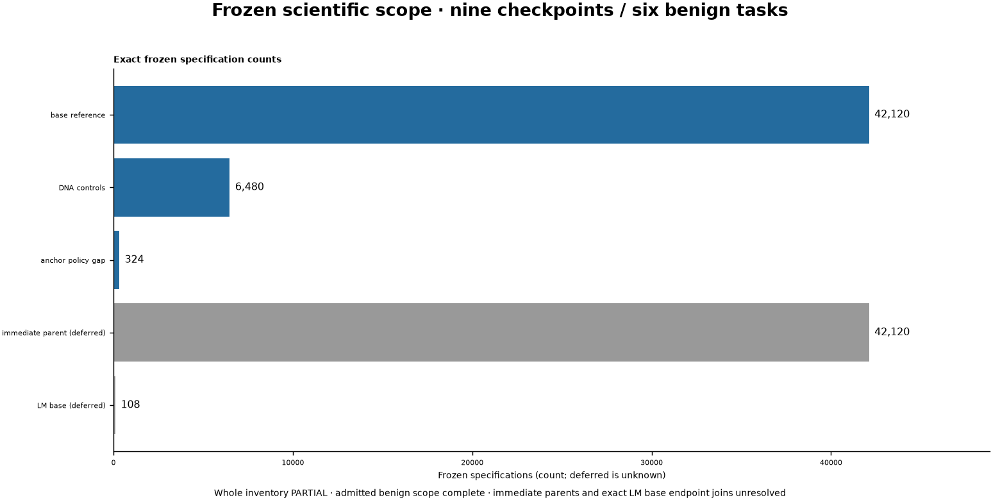
Frozen intended comparison universe with admitted and deferred categories explicitly separated. Deferred cells are unknown, not measured zero. Whole-delivery inventory remains PARTIAL despite complete admitted nine-checkpoint benign scope. 48,924 admitted and42,228 deferred keys exhaust the frozen91,152 specification universe; deferred is not a measured zero.
Vector PDF · SVG · Source specification
emp_H3 · AP · paired anchor comparisons
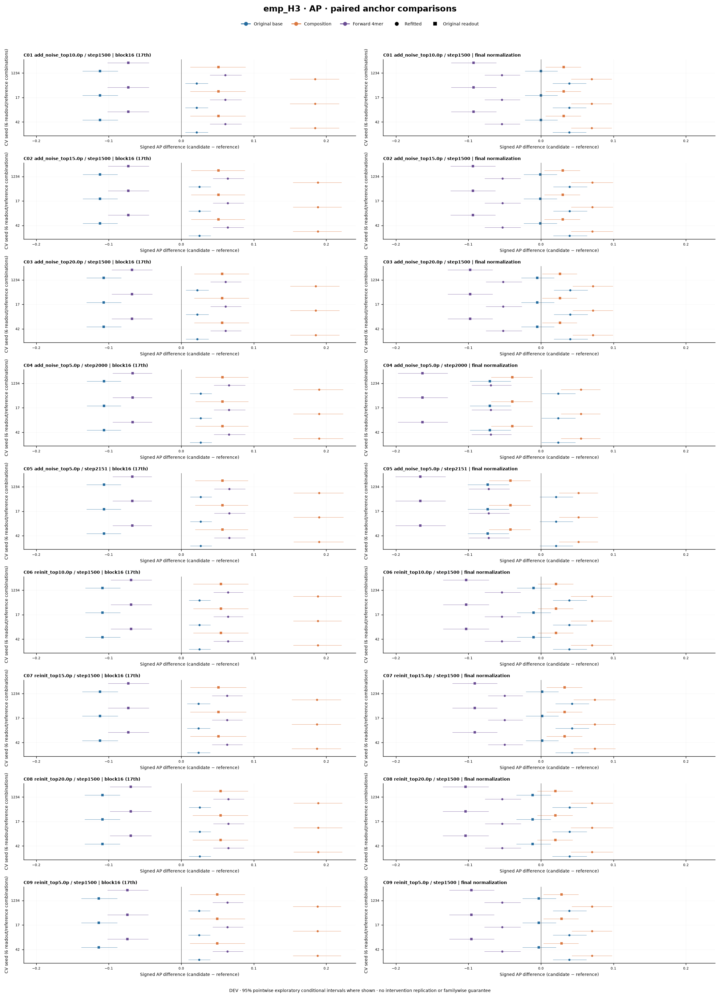
Target minus exact qualified reference at frozen block16 and final normalization anchors. All three seeds, both policies and original-base/composition/4mer references are shown. Bars are paired 95% pointwise exploratory conditional intervals; crossing zero does not establish equivalence. Negative classifier CE differences favor the candidate; other metric differences favor positive values. Displayed point values span -0.166155 to 0.190136; 189 of 324 displayed points are positive. These are displayed observations, with repeated/shared dependencies retained, not independent replicates.
Vector PDF · SVG · Source specification
emp_H3 · AUROC · paired anchor comparisons
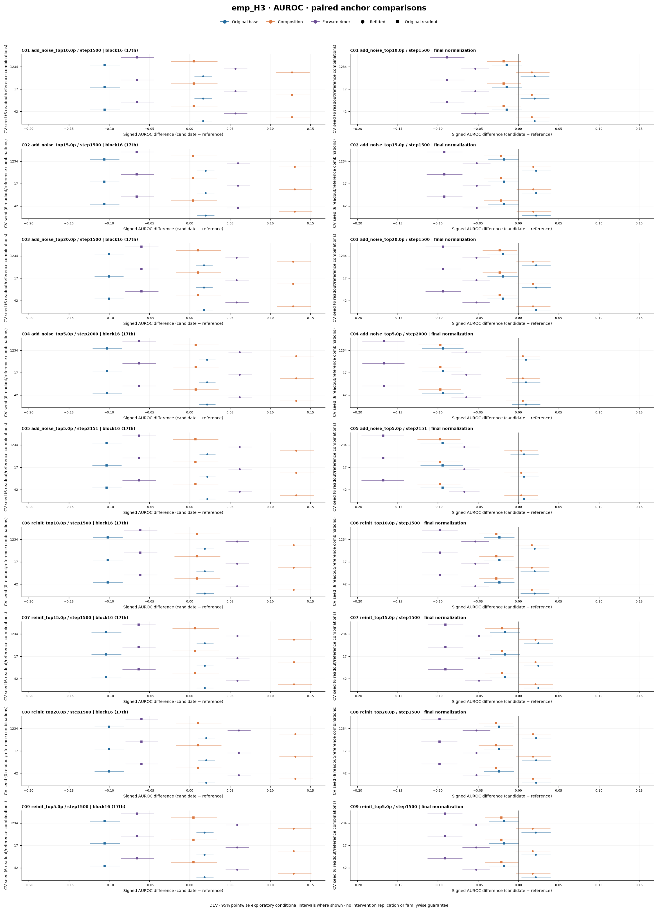
Target minus exact qualified reference at frozen block16 and final normalization anchors. All three seeds, both policies and original-base/composition/4mer references are shown. Bars are paired 95% pointwise exploratory conditional intervals; crossing zero does not establish equivalence. Negative classifier CE differences favor the candidate; other metric differences favor positive values. Displayed point values span -0.167879 to 0.132243; 162 of 324 displayed points are positive. These are displayed observations, with repeated/shared dependencies retained, not independent replicates.
Vector PDF · SVG · Source specification
emp_H3 · accuracy · paired anchor comparisons
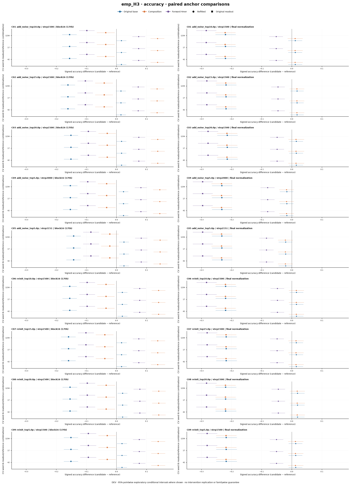
Target minus exact qualified reference at frozen block16 and final normalization anchors. All three seeds, both policies and original-base/composition/4mer references are shown. Bars are paired 95% pointwise exploratory conditional intervals; crossing zero does not establish equivalence. Negative classifier CE differences favor the candidate; other metric differences favor positive values. Displayed point values span -0.295925 to 0.144957; 123 of 324 displayed points are positive. These are displayed observations, with repeated/shared dependencies retained, not independent replicates.
Vector PDF · SVG · Source specification
emp_H3 · balanced_accuracy · paired anchor comparisons
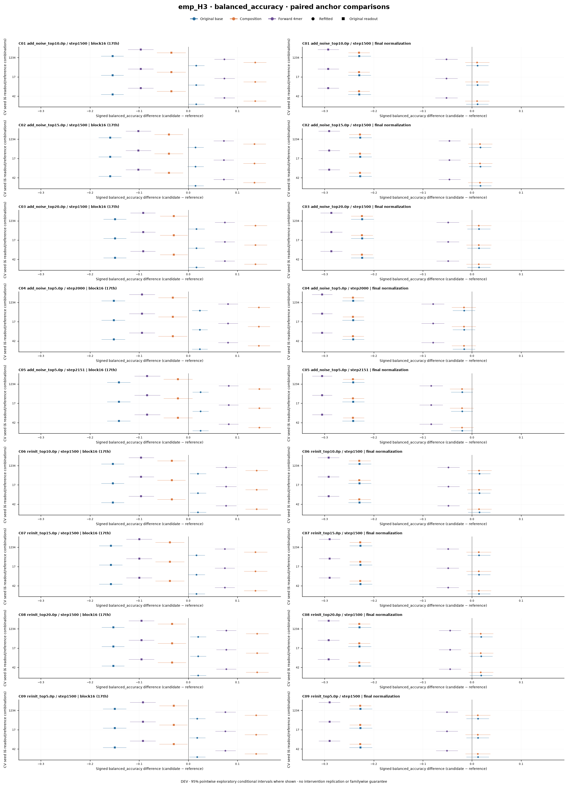
Target minus exact qualified reference at frozen block16 and final normalization anchors. All three seeds, both policies and original-base/composition/4mer references are shown. Bars are paired 95% pointwise exploratory conditional intervals; crossing zero does not establish equivalence. Negative classifier CE differences favor the candidate; other metric differences favor positive values. Displayed point values span -0.304952 to 0.144702; 123 of 324 displayed points are positive. These are displayed observations, with repeated/shared dependencies retained, not independent replicates.
Vector PDF · SVG · Source specification
emp_H3 · cross_entropy · paired anchor comparisons
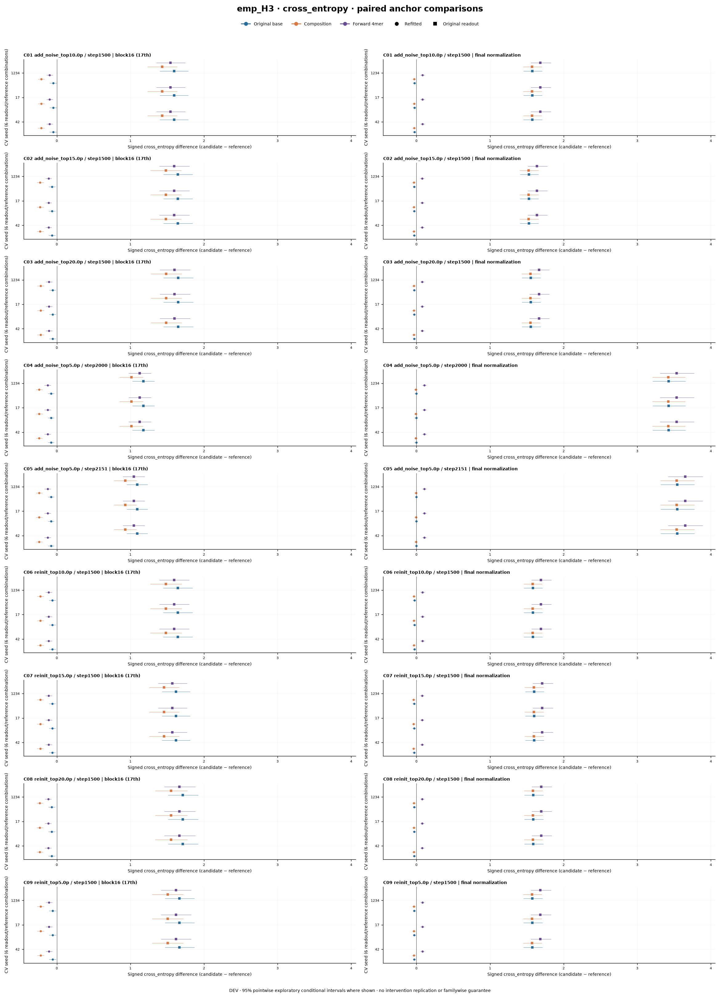
Target minus exact qualified reference at frozen block16 and final normalization anchors. All three seeds, both policies and original-base/composition/4mer references are shown. Bars are paired 95% pointwise exploratory conditional intervals; crossing zero does not establish equivalence. Negative classifier CE differences favor the candidate; other metric differences favor positive values. Displayed point values span -0.239136 to 3.650570; 189 of 324 displayed points are positive. These are displayed observations, with repeated/shared dependencies retained, not independent replicates.
Vector PDF · SVG · Source specification
gue_mouse_0 · AP · paired anchor comparisons
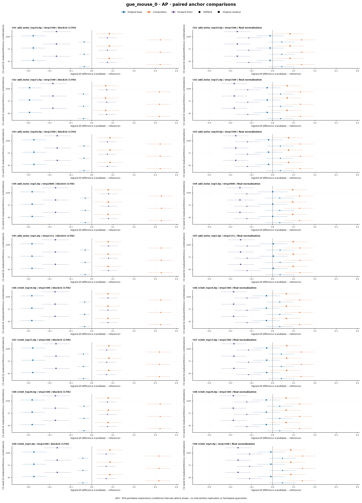
Target minus exact qualified reference at frozen block16 and final normalization anchors. All three seeds, both policies and original-base/composition/4mer references are shown. Bars are paired 95% pointwise exploratory conditional intervals; crossing zero does not establish equivalence. Negative classifier CE differences favor the candidate; other metric differences favor positive values. Displayed point values span -0.293221 to 0.327938; 168 of 324 displayed points are positive. These are displayed observations, with repeated/shared dependencies retained, not independent replicates.
Vector PDF · SVG · Source specification
gue_mouse_0 · AUROC · paired anchor comparisons
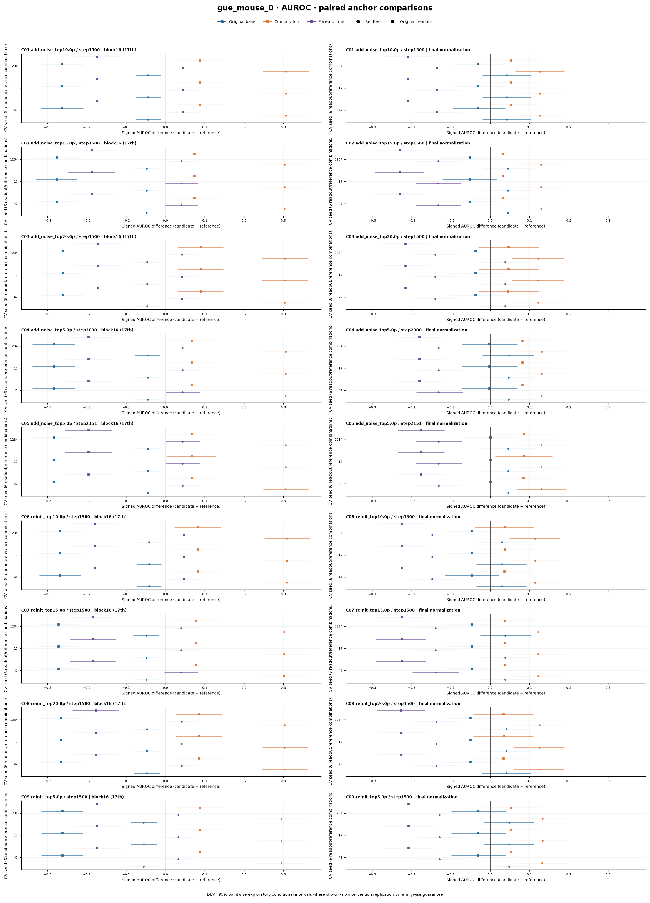
Target minus exact qualified reference at frozen block16 and final normalization anchors. All three seeds, both policies and original-base/composition/4mer references are shown. Bars are paired 95% pointwise exploratory conditional intervals; crossing zero does not establish equivalence. Negative classifier CE differences favor the candidate; other metric differences favor positive values. Displayed point values span -0.283817 to 0.309153; 165 of 324 displayed points are positive. These are displayed observations, with repeated/shared dependencies retained, not independent replicates.
Vector PDF · SVG · Source specification
gue_mouse_0 · accuracy · paired anchor comparisons
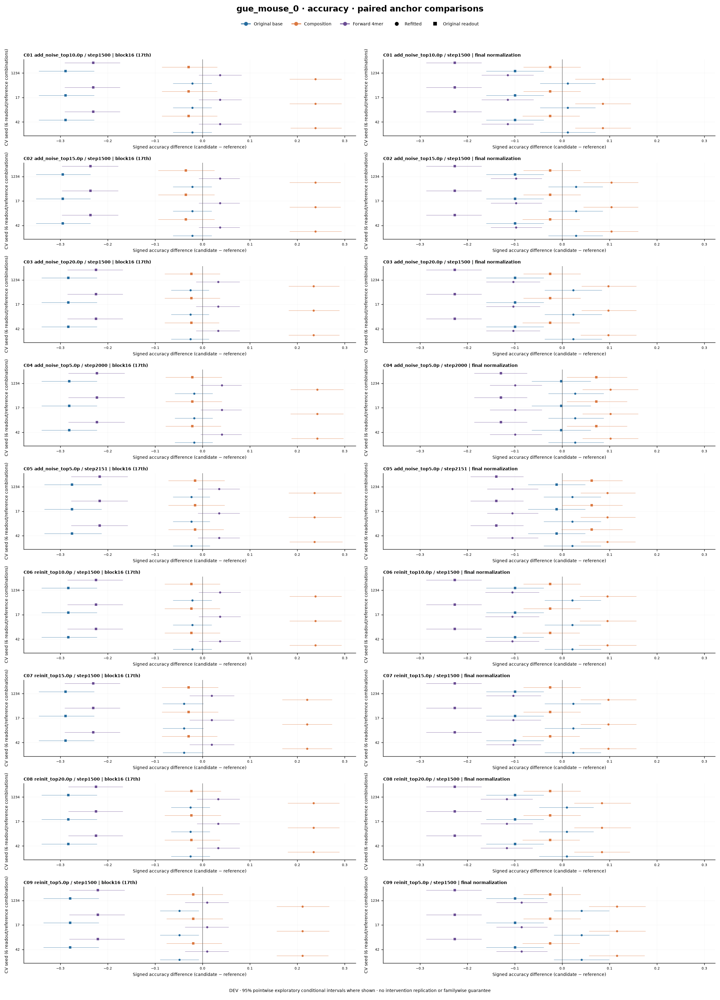
Target minus exact qualified reference at frozen block16 and final normalization anchors. All three seeds, both policies and original-base/composition/4mer references are shown. Bars are paired 95% pointwise exploratory conditional intervals; crossing zero does not establish equivalence. Negative classifier CE differences favor the candidate; other metric differences favor positive values. Displayed point values span -0.294922 to 0.242188; 114 of 324 displayed points are positive. These are displayed observations, with repeated/shared dependencies retained, not independent replicates.
Vector PDF · SVG · Source specification
gue_mouse_0 · balanced_accuracy · paired anchor comparisons
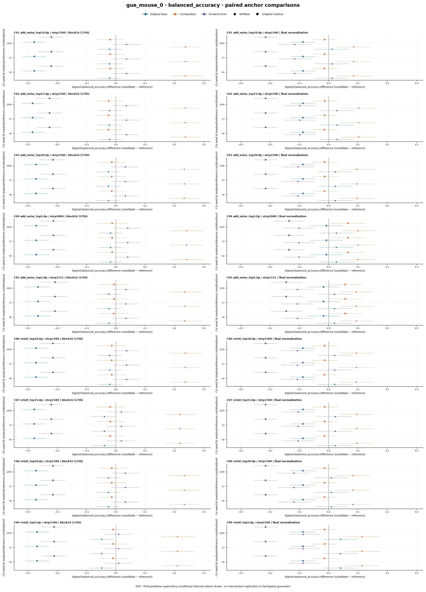
Target minus exact qualified reference at frozen block16 and final normalization anchors. All three seeds, both policies and original-base/composition/4mer references are shown. Bars are paired 95% pointwise exploratory conditional intervals; crossing zero does not establish equivalence. Negative classifier CE differences favor the candidate; other metric differences favor positive values. Displayed point values span -0.283588 to 0.240672; 114 of 324 displayed points are positive. These are displayed observations, with repeated/shared dependencies retained, not independent replicates.
Vector PDF · SVG · Source specification
gue_mouse_0 · cross_entropy · paired anchor comparisons
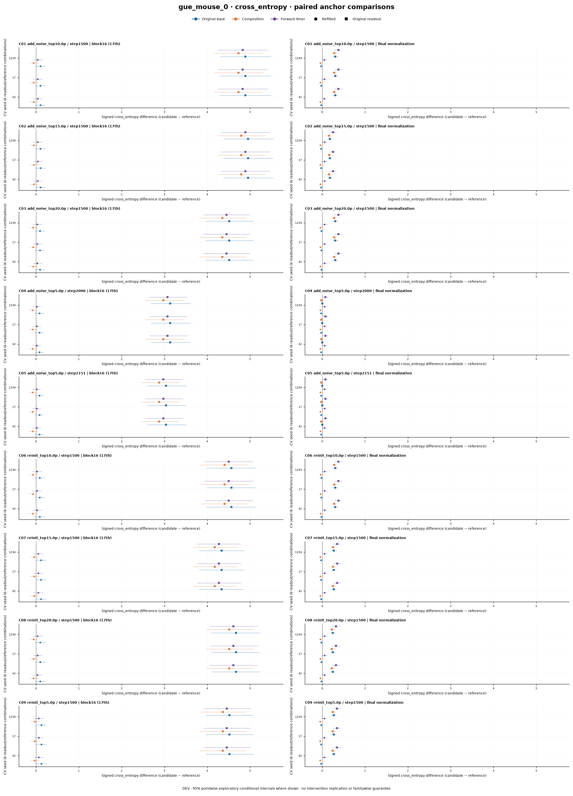
Target minus exact qualified reference at frozen block16 and final normalization anchors. All three seeds, both policies and original-base/composition/4mer references are shown. Bars are paired 95% pointwise exploratory conditional intervals; crossing zero does not establish equivalence. Negative classifier CE differences favor the candidate; other metric differences favor positive values. Displayed point values span -0.080361 to 4.952613; 234 of 324 displayed points are positive. These are displayed observations, with repeated/shared dependencies retained, not independent replicates.
Vector PDF · SVG · Source specification
gue_prom_300_all · AP · paired anchor comparisons
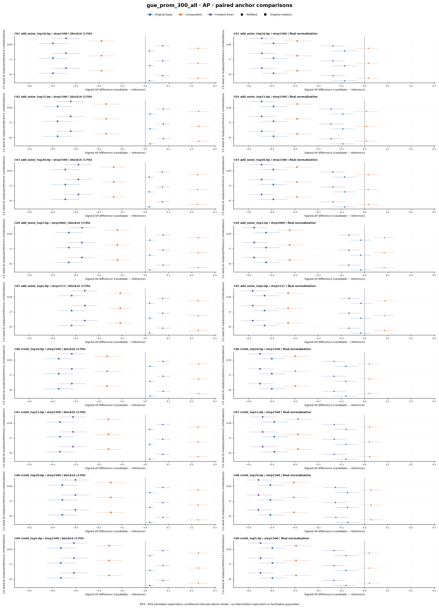
Target minus exact qualified reference at frozen block16 and final normalization anchors. All three seeds, both policies and original-base/composition/4mer references are shown. Bars are paired 95% pointwise exploratory conditional intervals; crossing zero does not establish equivalence. Negative classifier CE differences favor the candidate; other metric differences favor positive values. Displayed point values span -0.481103 to 0.230101; 108 of 324 displayed points are positive. These are displayed observations, with repeated/shared dependencies retained, not independent replicates.
Vector PDF · SVG · Source specification
gue_prom_300_all · AUROC · paired anchor comparisons
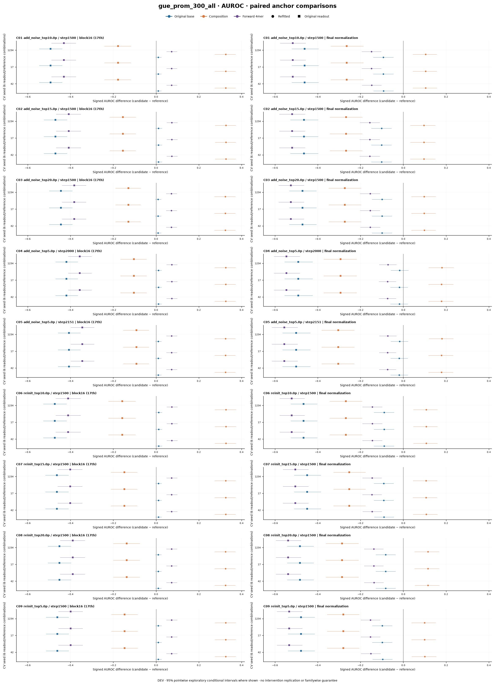
Target minus exact qualified reference at frozen block16 and final normalization anchors. All three seeds, both policies and original-base/composition/4mer references are shown. Bars are paired 95% pointwise exploratory conditional intervals; crossing zero does not establish equivalence. Negative classifier CE differences favor the candidate; other metric differences favor positive values. Displayed point values span -0.556405 to 0.326787; 108 of 324 displayed points are positive. These are displayed observations, with repeated/shared dependencies retained, not independent replicates.
Vector PDF · SVG · Source specification
gue_prom_300_all · accuracy · paired anchor comparisons
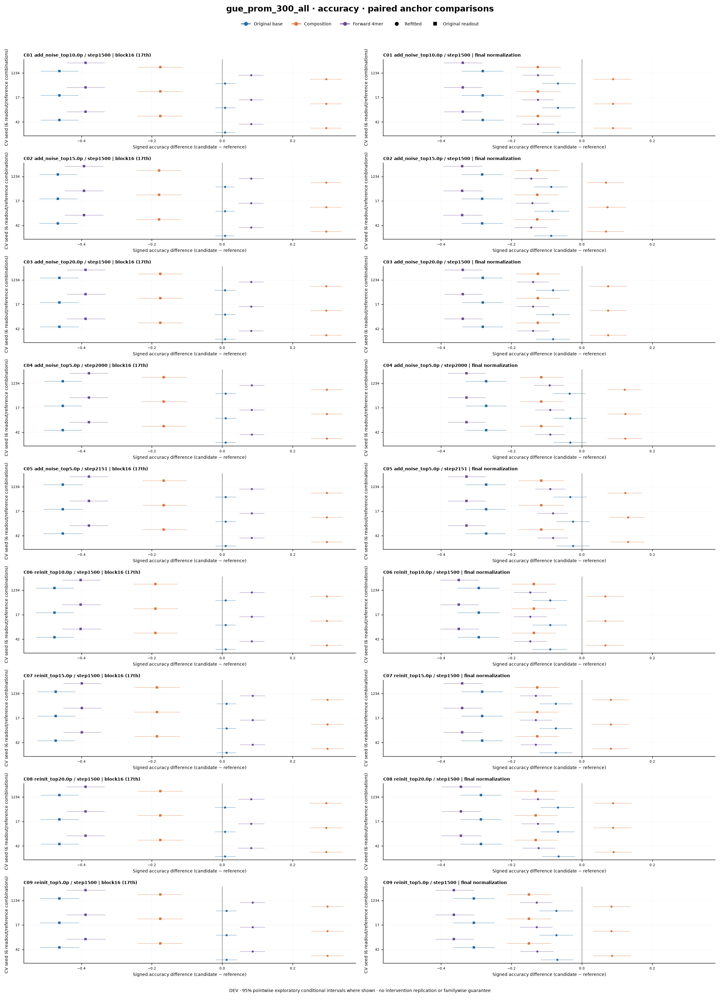
Target minus exact qualified reference at frozen block16 and final normalization anchors. All three seeds, both policies and original-base/composition/4mer references are shown. Bars are paired 95% pointwise exploratory conditional intervals; crossing zero does not establish equivalence. Negative classifier CE differences favor the candidate; other metric differences favor positive values. Displayed point values span -0.476562 to 0.298828; 108 of 324 displayed points are positive. These are displayed observations, with repeated/shared dependencies retained, not independent replicates.
Vector PDF · SVG · Source specification
gue_prom_300_all · balanced_accuracy · paired anchor comparisons
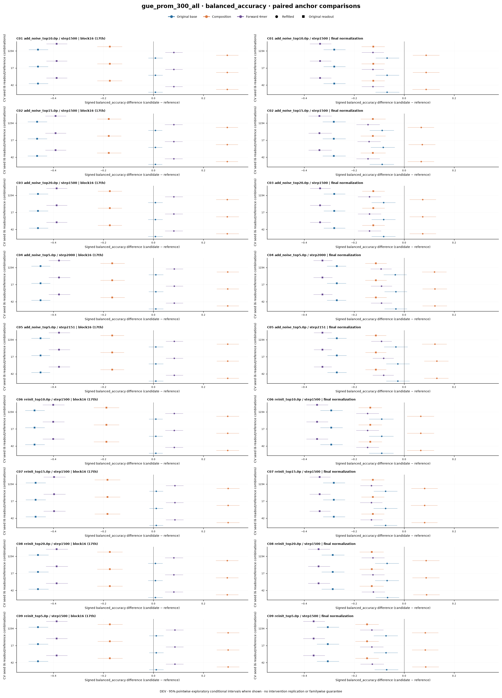
Target minus exact qualified reference at frozen block16 and final normalization anchors. All three seeds, both policies and original-base/composition/4mer references are shown. Bars are paired 95% pointwise exploratory conditional intervals; crossing zero does not establish equivalence. Negative classifier CE differences favor the candidate; other metric differences favor positive values. Displayed point values span -0.474968 to 0.298978; 108 of 324 displayed points are positive. These are displayed observations, with repeated/shared dependencies retained, not independent replicates.
Vector PDF · SVG · Source specification
gue_prom_300_all · cross_entropy · paired anchor comparisons
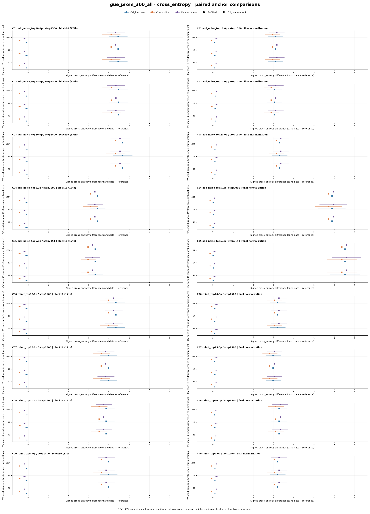
Target minus exact qualified reference at frozen block16 and final normalization anchors. All three seeds, both policies and original-base/composition/4mer references are shown. Bars are paired 95% pointwise exploratory conditional intervals; crossing zero does not establish equivalence. Negative classifier CE differences favor the candidate; other metric differences favor positive values. Displayed point values span -0.422615 to 6.601460; 216 of 324 displayed points are positive. These are displayed observations, with repeated/shared dependencies retained, not independent replicates.
Vector PDF · SVG · Source specification
gue_prom_core_all · AP · paired anchor comparisons
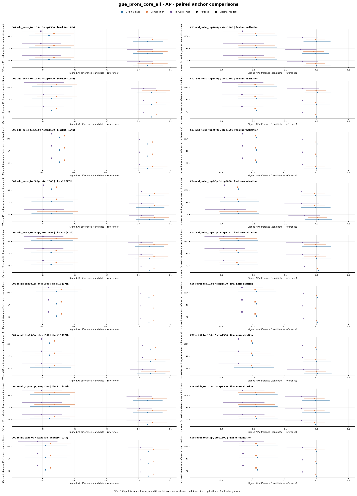
Target minus exact qualified reference at frozen block16 and final normalization anchors. All three seeds, both policies and original-base/composition/4mer references are shown. Bars are paired 95% pointwise exploratory conditional intervals; crossing zero does not establish equivalence. Negative classifier CE differences favor the candidate; other metric differences favor positive values. Displayed point values span -0.316387 to 0.055871; 97 of 324 displayed points are positive. These are displayed observations, with repeated/shared dependencies retained, not independent replicates.
Vector PDF · SVG · Source specification
gue_prom_core_all · AUROC · paired anchor comparisons
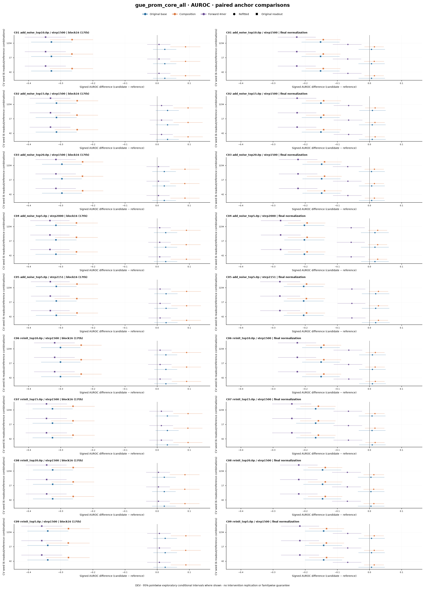
Target minus exact qualified reference at frozen block16 and final normalization anchors. All three seeds, both policies and original-base/composition/4mer references are shown. Bars are paired 95% pointwise exploratory conditional intervals; crossing zero does not establish equivalence. Negative classifier CE differences favor the candidate; other metric differences favor positive values. Displayed point values span -0.358527 to 0.096342; 135 of 324 displayed points are positive. These are displayed observations, with repeated/shared dependencies retained, not independent replicates.
Vector PDF · SVG · Source specification
gue_prom_core_all · accuracy · paired anchor comparisons
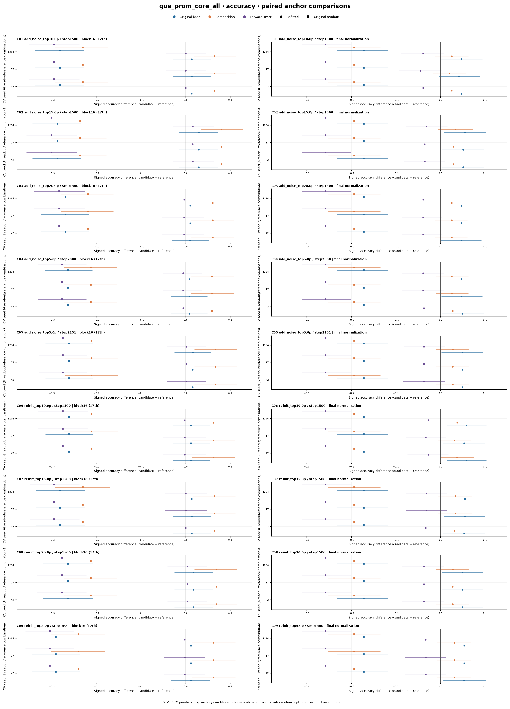
Target minus exact qualified reference at frozen block16 and final normalization anchors. All three seeds, both policies and original-base/composition/4mer references are shown. Bars are paired 95% pointwise exploratory conditional intervals; crossing zero does not establish equivalence. Negative classifier CE differences favor the candidate; other metric differences favor positive values. Displayed point values span -0.304688 to 0.080078; 117 of 324 displayed points are positive. These are displayed observations, with repeated/shared dependencies retained, not independent replicates.
Vector PDF · SVG · Source specification
gue_prom_core_all · balanced_accuracy · paired anchor comparisons
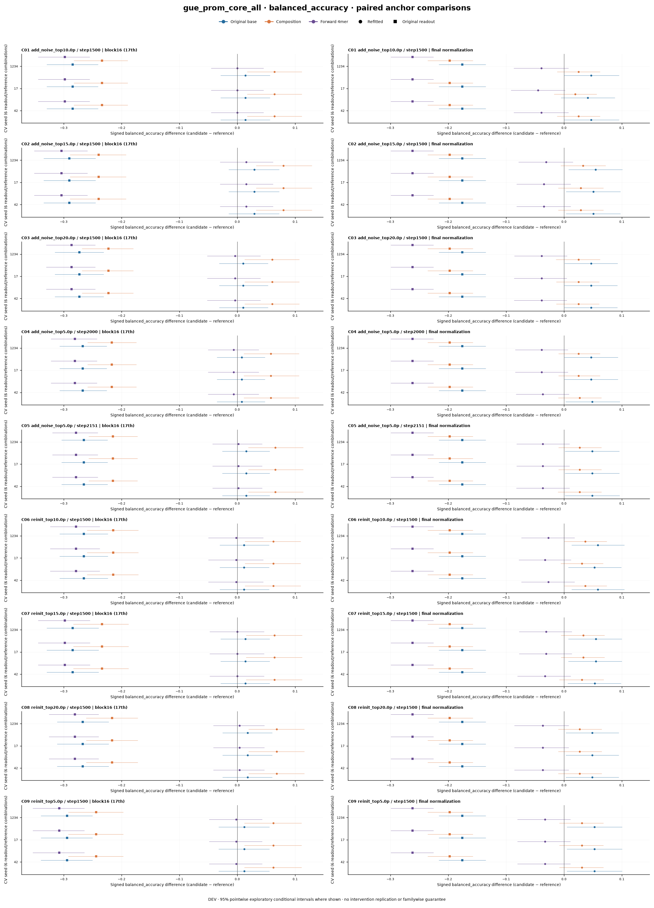
Target minus exact qualified reference at frozen block16 and final normalization anchors. All three seeds, both policies and original-base/composition/4mer references are shown. Bars are paired 95% pointwise exploratory conditional intervals; crossing zero does not establish equivalence. Negative classifier CE differences favor the candidate; other metric differences favor positive values. Displayed point values span -0.307758 to 0.079671; 123 of 324 displayed points are positive. These are displayed observations, with repeated/shared dependencies retained, not independent replicates.
Vector PDF · SVG · Source specification
gue_prom_core_all · cross_entropy · paired anchor comparisons
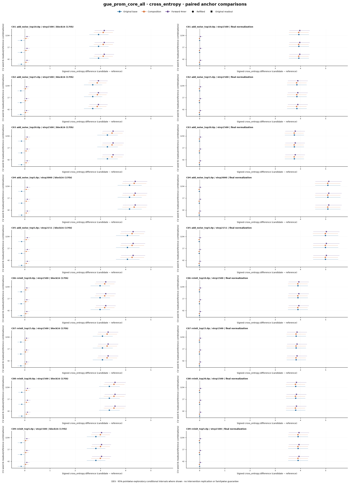
Target minus exact qualified reference at frozen block16 and final normalization anchors. All three seeds, both policies and original-base/composition/4mer references are shown. Bars are paired 95% pointwise exploratory conditional intervals; crossing zero does not establish equivalence. Negative classifier CE differences favor the candidate; other metric differences favor positive values. Displayed point values span -0.160194 to 5.120435; 243 of 324 displayed points are positive. These are displayed observations, with repeated/shared dependencies retained, not independent replicates.
Vector PDF · SVG · Source specification
gue_splice_reconstructed · AP · paired anchor comparisons
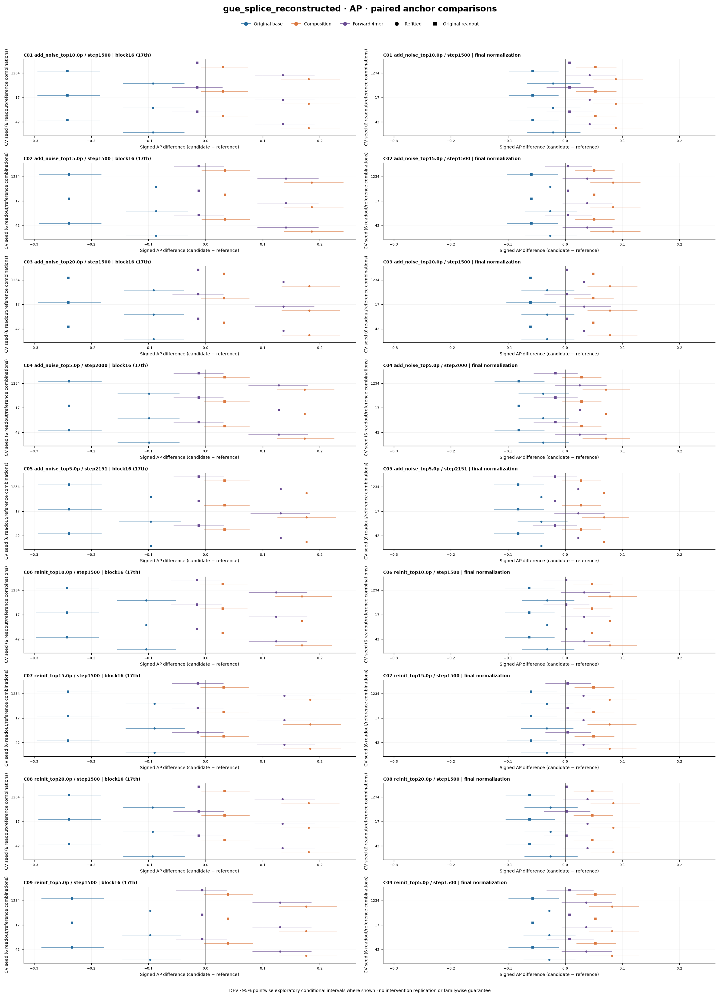
Target minus exact qualified reference at frozen block16 and final normalization anchors. All three seeds, both policies and original-base/composition/4mer references are shown. Bars are paired 95% pointwise exploratory conditional intervals; crossing zero does not establish equivalence. Negative classifier CE differences favor the candidate; other metric differences favor positive values. Displayed point values span -0.242528 to 0.185791; 183 of 324 displayed points are positive. These are displayed observations, with repeated/shared dependencies retained, not independent replicates.
Vector PDF · SVG · Source specification
gue_splice_reconstructed · AUROC · paired anchor comparisons
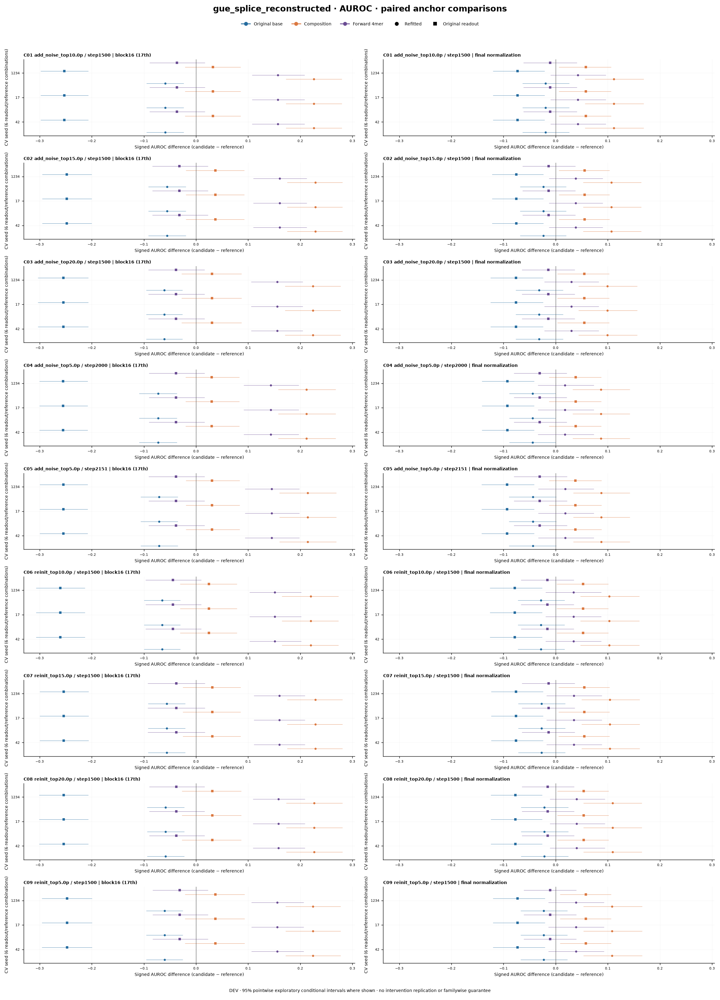
Target minus exact qualified reference at frozen block16 and final normalization anchors. All three seeds, both policies and original-base/composition/4mer references are shown. Bars are paired 95% pointwise exploratory conditional intervals; crossing zero does not establish equivalence. Negative classifier CE differences favor the candidate; other metric differences favor positive values. Displayed point values span -0.260427 to 0.229309; 162 of 324 displayed points are positive. These are displayed observations, with repeated/shared dependencies retained, not independent replicates.
Vector PDF · SVG · Source specification
gue_splice_reconstructed · accuracy · paired anchor comparisons
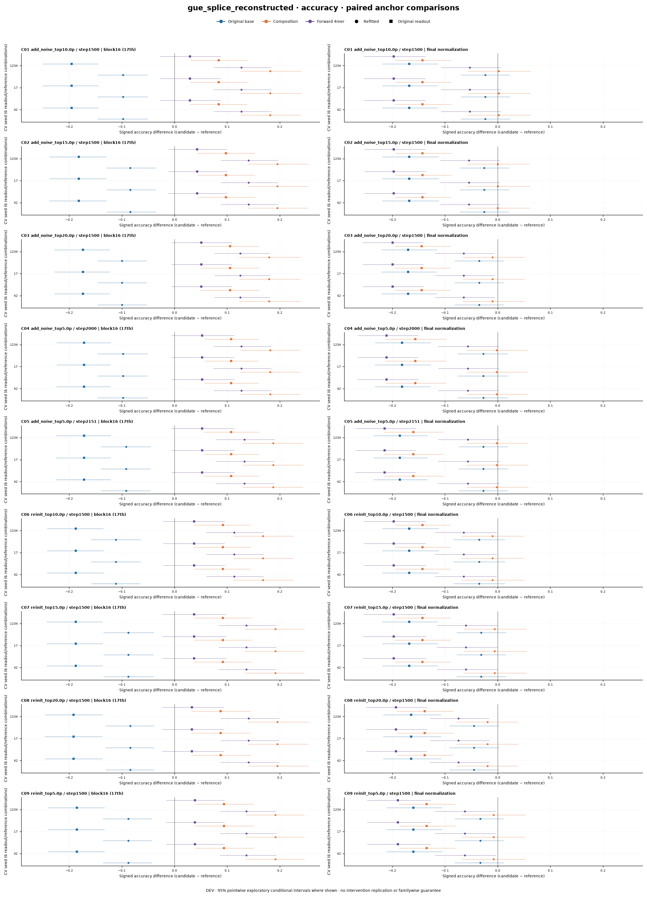
Target minus exact qualified reference at frozen block16 and final normalization anchors. All three seeds, both policies and original-base/composition/4mer references are shown. Bars are paired 95% pointwise exploratory conditional intervals; crossing zero does not establish equivalence. Negative classifier CE differences favor the candidate; other metric differences favor positive values. Displayed point values span -0.214844 to 0.195312; 111 of 324 displayed points are positive. These are displayed observations, with repeated/shared dependencies retained, not independent replicates.
Vector PDF · SVG · Source specification
gue_splice_reconstructed · balanced_accuracy · paired anchor comparisons
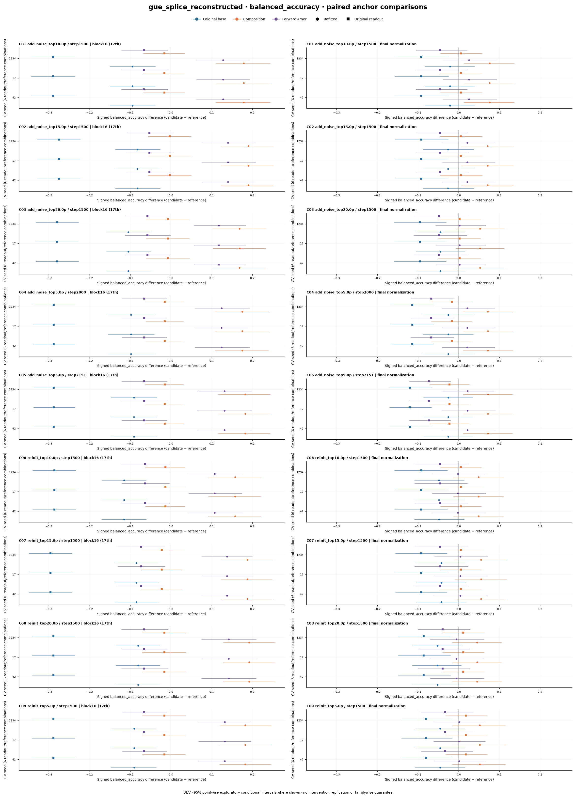
Target minus exact qualified reference at frozen block16 and final normalization anchors. All three seeds, both policies and original-base/composition/4mer references are shown. Bars are paired 95% pointwise exploratory conditional intervals; crossing zero does not establish equivalence. Negative classifier CE differences favor the candidate; other metric differences favor positive values. Displayed point values span -0.295740 to 0.192353; 123 of 324 displayed points are positive. These are displayed observations, with repeated/shared dependencies retained, not independent replicates.
Vector PDF · SVG · Source specification
gue_splice_reconstructed · cross_entropy · paired anchor comparisons
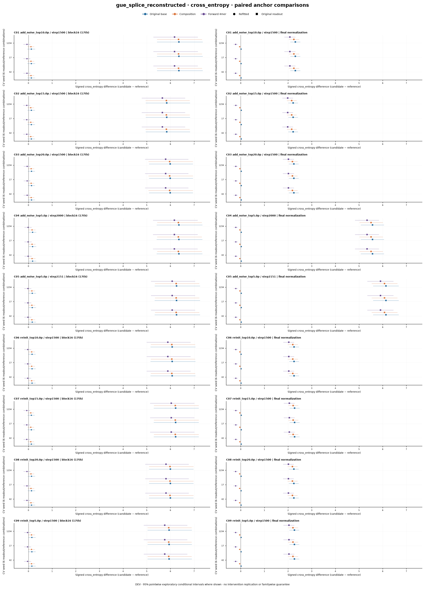
Target minus exact qualified reference at frozen block16 and final normalization anchors. All three seeds, both policies and original-base/composition/4mer references are shown. Bars are paired 95% pointwise exploratory conditional intervals; crossing zero does not establish equivalence. Negative classifier CE differences favor the candidate; other metric differences favor positive values. Displayed point values span -0.217277 to 6.360263; 243 of 324 displayed points are positive. These are displayed observations, with repeated/shared dependencies retained, not independent replicates.
Vector PDF · SVG · Source specification
gue_tf_0 · AP · paired anchor comparisons
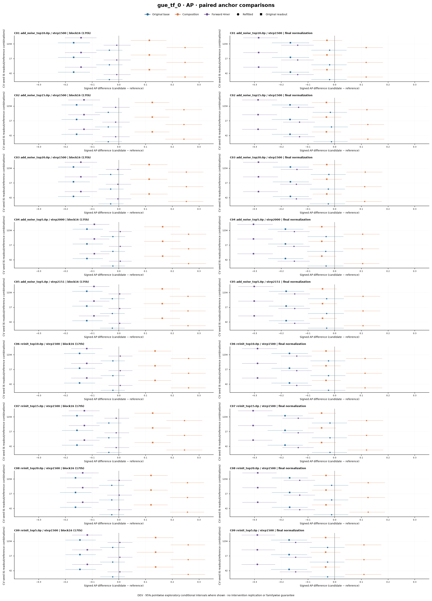
Target minus exact qualified reference at frozen block16 and final normalization anchors. All three seeds, both policies and original-base/composition/4mer references are shown. Bars are paired 95% pointwise exploratory conditional intervals; crossing zero does not establish equivalence. Negative classifier CE differences favor the candidate; other metric differences favor positive values. Displayed point values span -0.304692 to 0.260766; 96 of 324 displayed points are positive. These are displayed observations, with repeated/shared dependencies retained, not independent replicates.
Vector PDF · SVG · Source specification
gue_tf_0 · AUROC · paired anchor comparisons
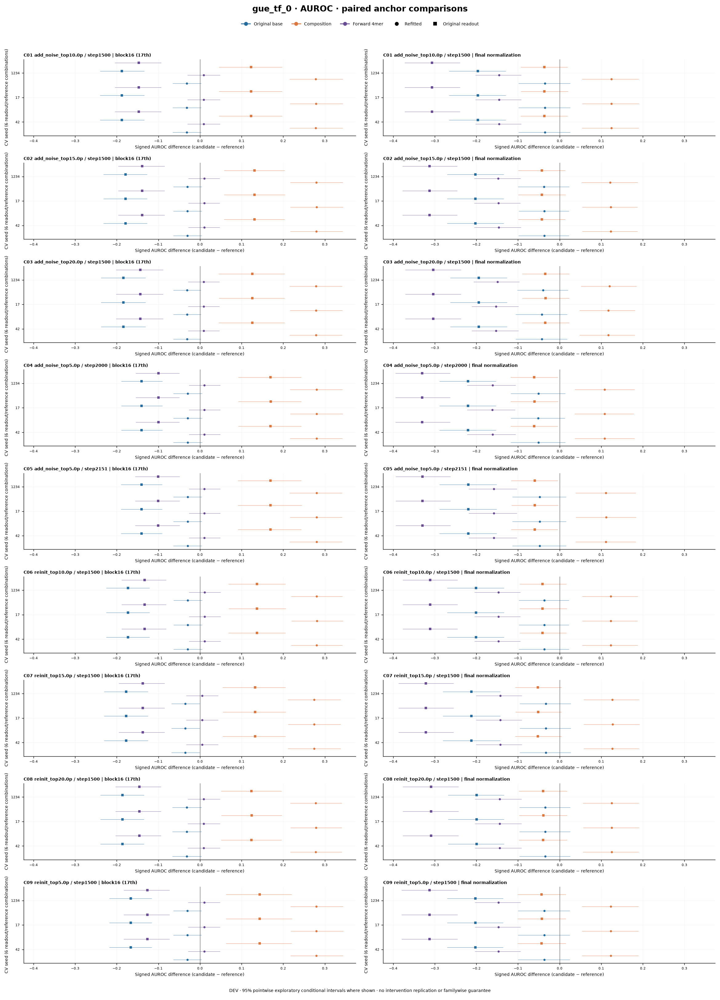
Target minus exact qualified reference at frozen block16 and final normalization anchors. All three seeds, both policies and original-base/composition/4mer references are shown. Bars are paired 95% pointwise exploratory conditional intervals; crossing zero does not establish equivalence. Negative classifier CE differences favor the candidate; other metric differences favor positive values. Displayed point values span -0.330364 to 0.281010; 108 of 324 displayed points are positive. These are displayed observations, with repeated/shared dependencies retained, not independent replicates.
Vector PDF · SVG · Source specification
gue_tf_0 · accuracy · paired anchor comparisons
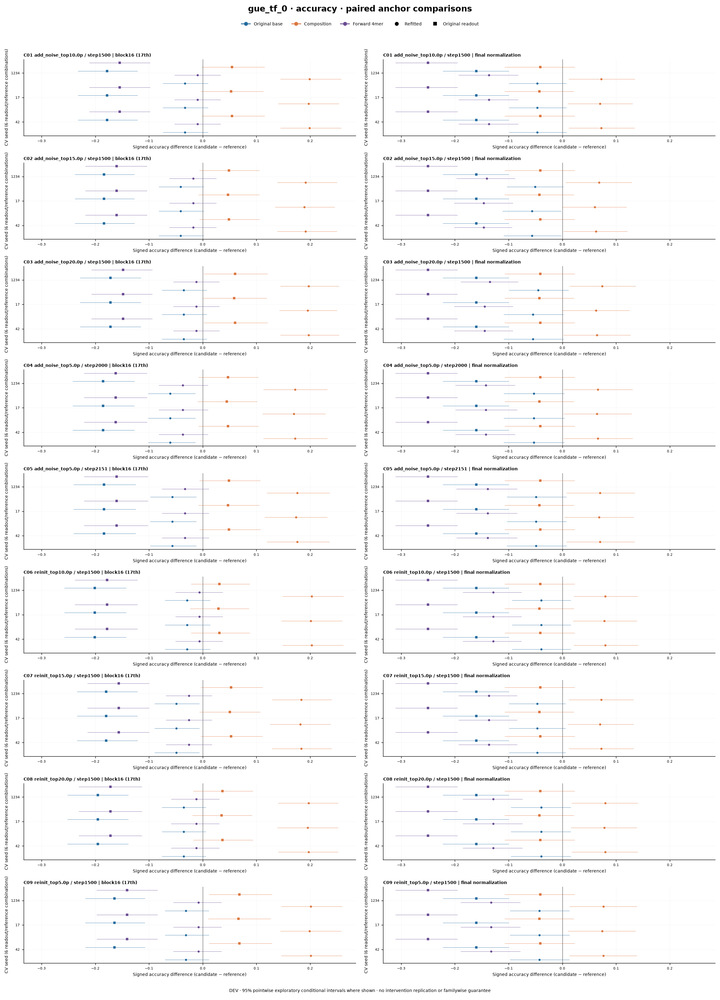
Target minus exact qualified reference at frozen block16 and final normalization anchors. All three seeds, both policies and original-base/composition/4mer references are shown. Bars are paired 95% pointwise exploratory conditional intervals; crossing zero does not establish equivalence. Negative classifier CE differences favor the candidate; other metric differences favor positive values. Displayed point values span -0.250000 to 0.203125; 81 of 324 displayed points are positive. These are displayed observations, with repeated/shared dependencies retained, not independent replicates.
Vector PDF · SVG · Source specification
gue_tf_0 · balanced_accuracy · paired anchor comparisons
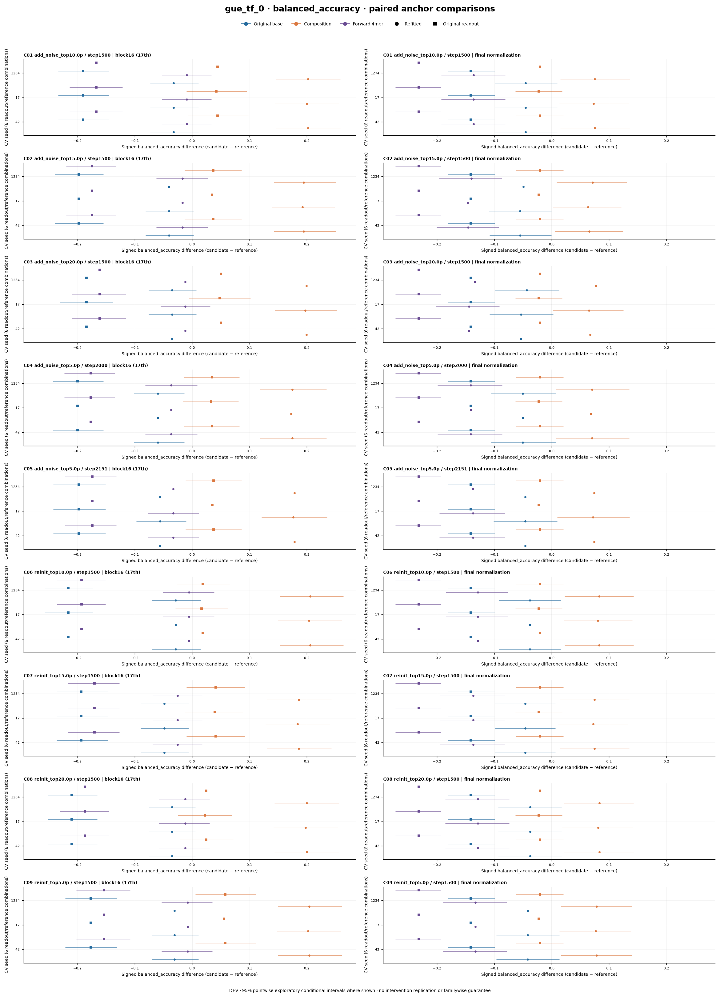
Target minus exact qualified reference at frozen block16 and final normalization anchors. All three seeds, both policies and original-base/composition/4mer references are shown. Bars are paired 95% pointwise exploratory conditional intervals; crossing zero does not establish equivalence. Negative classifier CE differences favor the candidate; other metric differences favor positive values. Displayed point values span -0.231885 to 0.205989; 81 of 324 displayed points are positive. These are displayed observations, with repeated/shared dependencies retained, not independent replicates.
Vector PDF · SVG · Source specification
gue_tf_0 · cross_entropy · paired anchor comparisons
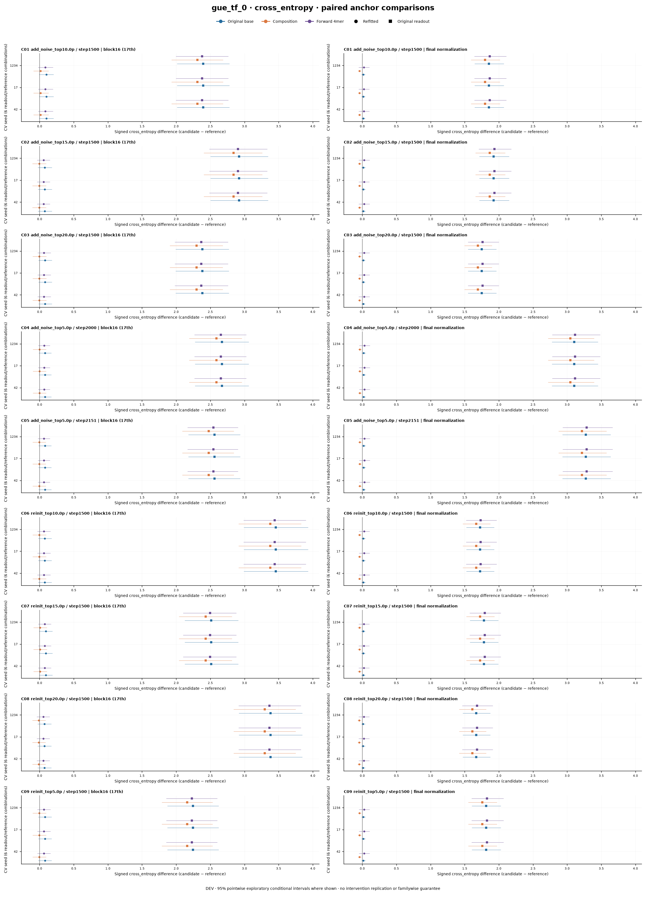
Target minus exact qualified reference at frozen block16 and final normalization anchors. All three seeds, both policies and original-base/composition/4mer references are shown. Bars are paired 95% pointwise exploratory conditional intervals; crossing zero does not establish equivalence. Negative classifier CE differences favor the candidate; other metric differences favor positive values. Displayed point values span -0.044253 to 3.459214; 276 of 324 displayed points are positive. These are displayed observations, with repeated/shared dependencies retained, not independent replicates.
Vector PDF · SVG · Source specification
emp_H3 · all 54 admitted anchor policy gaps
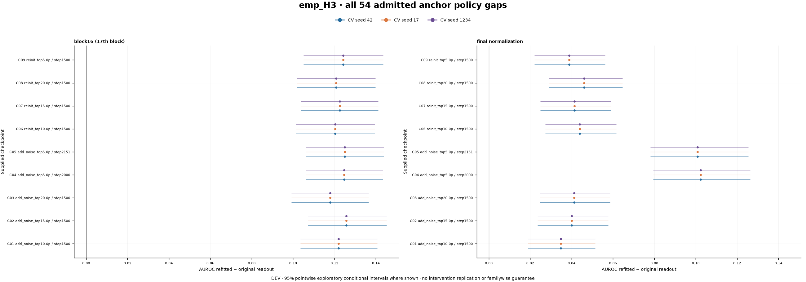
All admitted anchor AUROC(refitted)-AUROC(original readout) gaps, three seeds and nine checkpoints. Bars are paired 95% pointwise exploratory conditional intervals. Positive means greater refitted AUROC, with no universal higher-is-better ordering or causal mechanism claim. Displayed point values span 0.034778 to 0.125761; 54 of 54 displayed points are positive. These are displayed observations, with repeated/shared dependencies retained, not independent replicates.
Vector PDF · SVG · Source specification
gue_mouse_0 · all 54 admitted anchor policy gaps
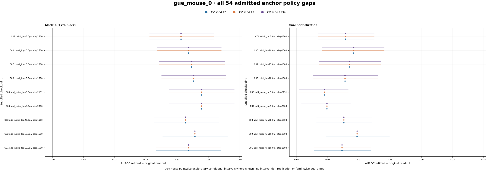
All admitted anchor AUROC(refitted)-AUROC(original readout) gaps, three seeds and nine checkpoints. Bars are paired 95% pointwise exploratory conditional intervals. Positive means greater refitted AUROC, with no universal higher-is-better ordering or causal mechanism claim. Displayed point values span 0.045008 to 0.238931; 54 of 54 displayed points are positive. These are displayed observations, with repeated/shared dependencies retained, not independent replicates.
Vector PDF · SVG · Source specification
gue_prom_300_all · all 54 admitted anchor policy gaps
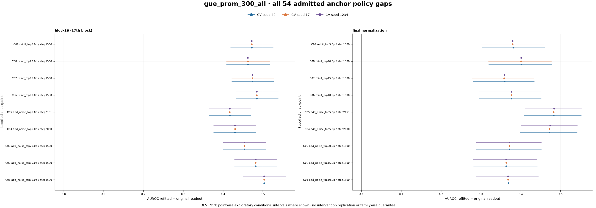
All admitted anchor AUROC(refitted)-AUROC(original readout) gaps, three seeds and nine checkpoints. Bars are paired 95% pointwise exploratory conditional intervals. Positive means greater refitted AUROC, with no universal higher-is-better ordering or causal mechanism claim. Displayed point values span 0.358282 to 0.503517; 54 of 54 displayed points are positive. These are displayed observations, with repeated/shared dependencies retained, not independent replicates.
Vector PDF · SVG · Source specification
gue_prom_core_all · all 54 admitted anchor policy gaps
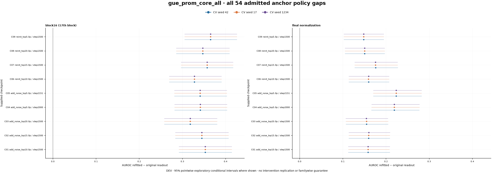
All admitted anchor AUROC(refitted)-AUROC(original readout) gaps, three seeds and nine checkpoints. Bars are paired 95% pointwise exploratory conditional intervals. Positive means greater refitted AUROC, with no universal higher-is-better ordering or causal mechanism claim. Displayed point values span 0.148355 to 0.365089; 54 of 54 displayed points are positive. These are displayed observations, with repeated/shared dependencies retained, not independent replicates.
Vector PDF · SVG · Source specification
gue_splice_reconstructed · all 54 admitted anchor policy gaps
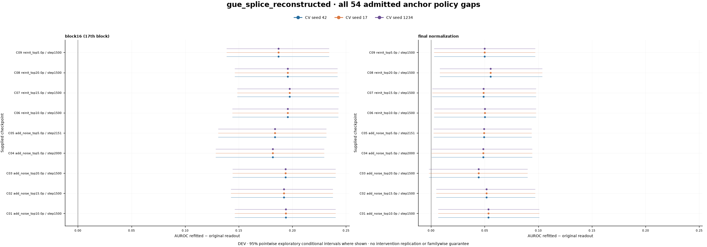
All admitted anchor AUROC(refitted)-AUROC(original readout) gaps, three seeds and nine checkpoints. Bars are paired 95% pointwise exploratory conditional intervals. Positive means greater refitted AUROC, with no universal higher-is-better ordering or causal mechanism claim. Displayed point values span 0.044320 to 0.197458; 54 of 54 displayed points are positive. These are displayed observations, with repeated/shared dependencies retained, not independent replicates.
Vector PDF · SVG · Source specification
gue_tf_0 · all 54 admitted anchor policy gaps
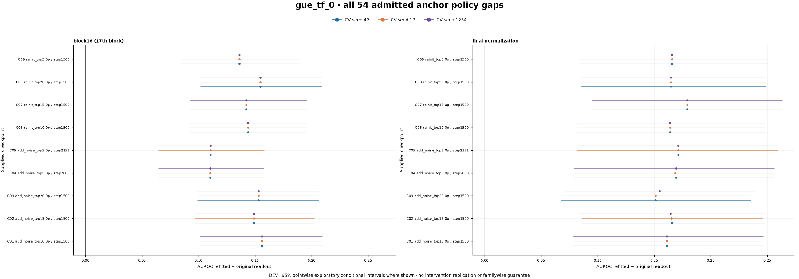
All admitted anchor AUROC(refitted)-AUROC(original readout) gaps, three seeds and nine checkpoints. Bars are paired 95% pointwise exploratory conditional intervals. Positive means greater refitted AUROC, with no universal higher-is-better ordering or causal mechanism claim. Displayed point values span 0.110488 to 0.179054; 54 of 54 displayed points are positive. These are displayed observations, with repeated/shared dependencies retained, not independent replicates.
Vector PDF · SVG · Source specification
emp_H3 · AP · differences from original base
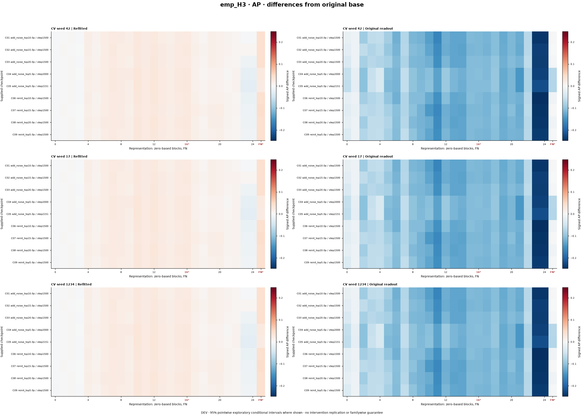
Complete candidate-by-representation signed candidate-minus-original-base differences for every CV seed and policy. A common zero-centered scale is used across panels within this metric/task. Values are descriptive; cell color does not imply familywise significance. Readout compatibility need not follow refitted accessibility. Complete signed effects span -0.247814 to 0.042867; 798 negative, 606 positive and 0 exactly zero cells. Favorability follows the metric direction, with lower classifier CE better.
Vector PDF · SVG · Source specification
emp_H3 · AUROC · differences from original base
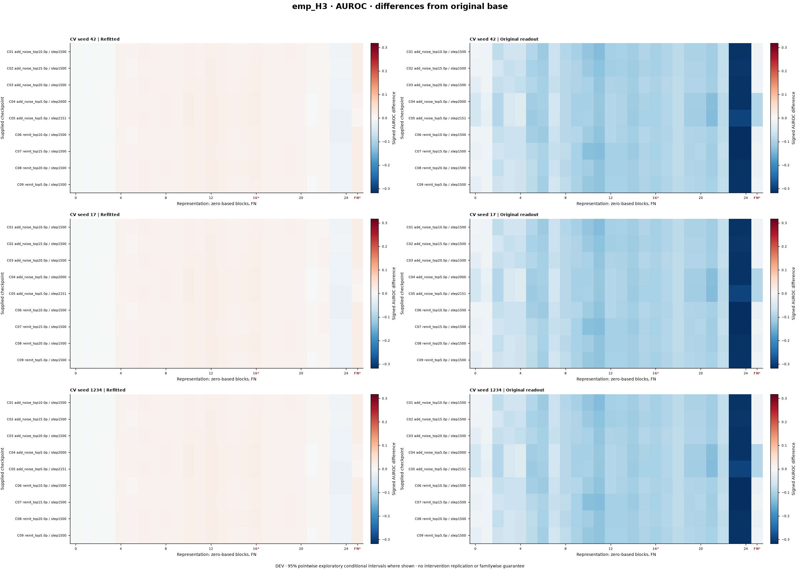
Complete candidate-by-representation signed candidate-minus-original-base differences for every CV seed and policy. A common zero-centered scale is used across panels within this metric/task. Values are descriptive; cell color does not imply familywise significance. Readout compatibility need not follow refitted accessibility. Complete signed effects span -0.317937 to 0.024763; 858 negative, 546 positive and 0 exactly zero cells. Favorability follows the metric direction, with lower classifier CE better.
Vector PDF · SVG · Source specification
emp_H3 · accuracy · differences from original base
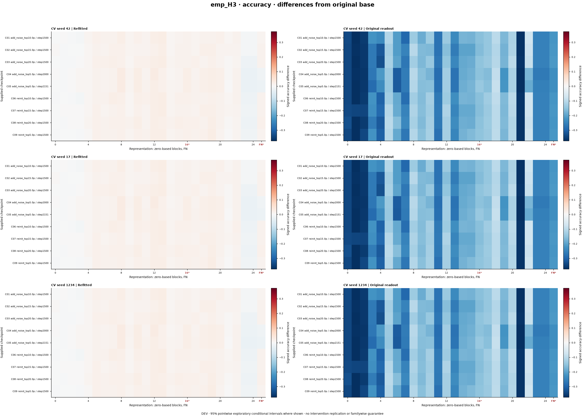
Complete candidate-by-representation signed candidate-minus-original-base differences for every CV seed and policy. A common zero-centered scale is used across panels within this metric/task. Values are descriptive; cell color does not imply familywise significance. Readout compatibility need not follow refitted accessibility. Complete signed effects span -0.373413 to 0.030060; 831 negative, 561 positive and 12 exactly zero cells. Favorability follows the metric direction, with lower classifier CE better.
Vector PDF · SVG · Source specification
emp_H3 · balanced_accuracy · differences from original base
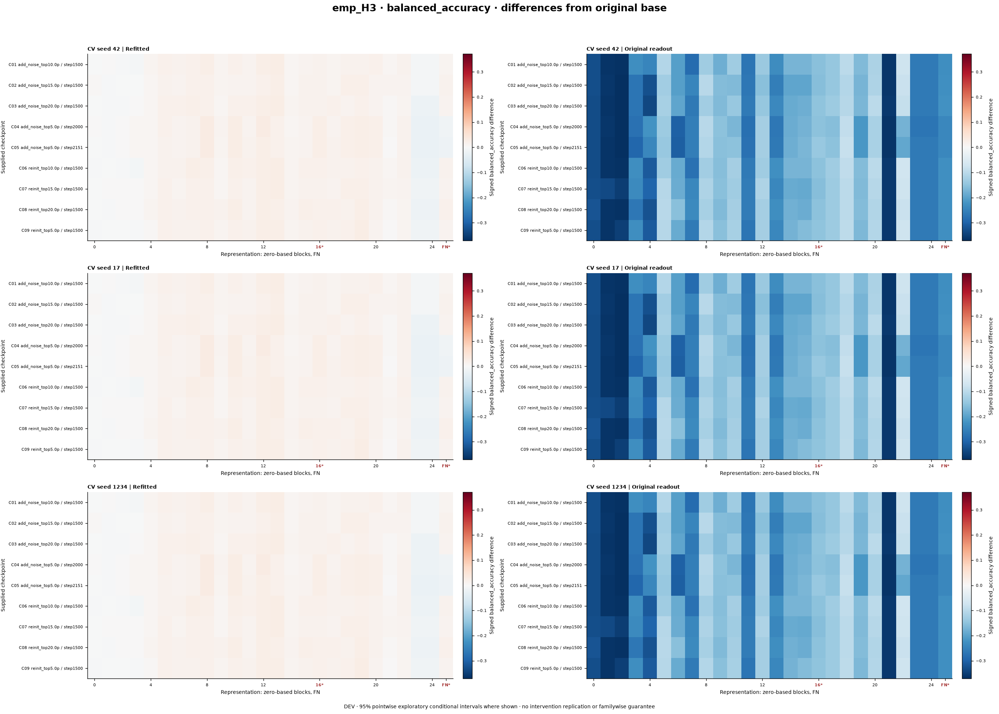
Complete candidate-by-representation signed candidate-minus-original-base differences for every CV seed and policy. A common zero-centered scale is used across panels within this metric/task. Values are descriptive; cell color does not imply familywise significance. Readout compatibility need not follow refitted accessibility. Complete signed effects span -0.371238 to 0.030058; 831 negative, 570 positive and 3 exactly zero cells. Favorability follows the metric direction, with lower classifier CE better.
Vector PDF · SVG · Source specification
emp_H3 · cross_entropy · differences from original base
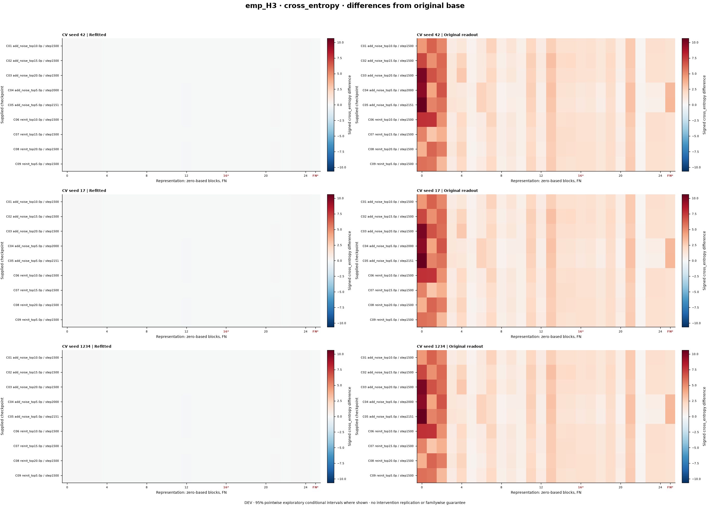
Complete candidate-by-representation signed candidate-minus-original-base differences for every CV seed and policy. A common zero-centered scale is used across panels within this metric/task. Values are descriptive; cell color does not imply familywise significance. Readout compatibility need not follow refitted accessibility. Complete signed effects span -0.091908 to 10.633148; 522 negative, 882 positive and 0 exactly zero cells. Favorability follows the metric direction, with lower classifier CE better.
Vector PDF · SVG · Source specification
gue_mouse_0 · AP · differences from original base
Complete candidate-by-representation signed candidate-minus-original-base differences for every CV seed and policy. A common zero-centered scale is used across panels within this metric/task. Values are descriptive; cell color does not imply familywise significance. Readout compatibility need not follow refitted accessibility. Complete signed effects span -0.390714 to 0.046521; 1227 negative, 177 positive and 0 exactly zero cells. Favorability follows the metric direction, with lower classifier CE better.
Vector PDF · SVG · Source specification
gue_mouse_0 · AUROC · differences from original base
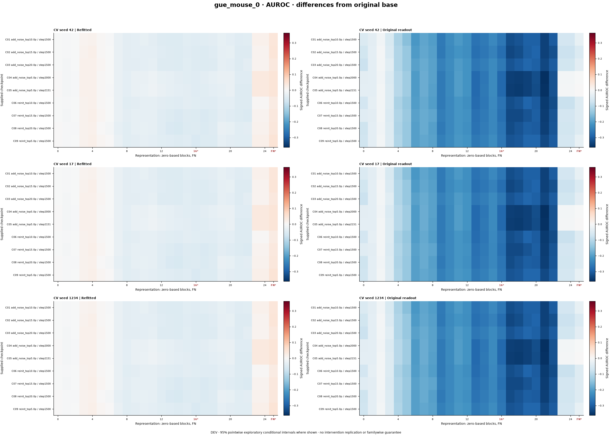
Complete candidate-by-representation signed candidate-minus-original-base differences for every CV seed and policy. A common zero-centered scale is used across panels within this metric/task. Values are descriptive; cell color does not imply familywise significance. Readout compatibility need not follow refitted accessibility. Complete signed effects span -0.362107 to 0.048641; 1224 negative, 180 positive and 0 exactly zero cells. Favorability follows the metric direction, with lower classifier CE better.
Vector PDF · SVG · Source specification
gue_mouse_0 · accuracy · differences from original base
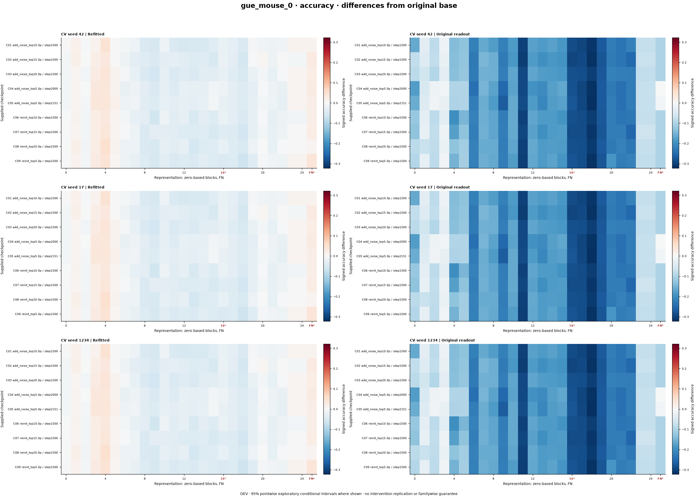
Complete candidate-by-representation signed candidate-minus-original-base differences for every CV seed and policy. A common zero-centered scale is used across panels within this metric/task. Values are descriptive; cell color does not imply familywise significance. Readout compatibility need not follow refitted accessibility. Complete signed effects span -0.322266 to 0.050781; 1212 negative, 180 positive and 12 exactly zero cells. Favorability follows the metric direction, with lower classifier CE better.
Vector PDF · SVG · Source specification
gue_mouse_0 · balanced_accuracy · differences from original base
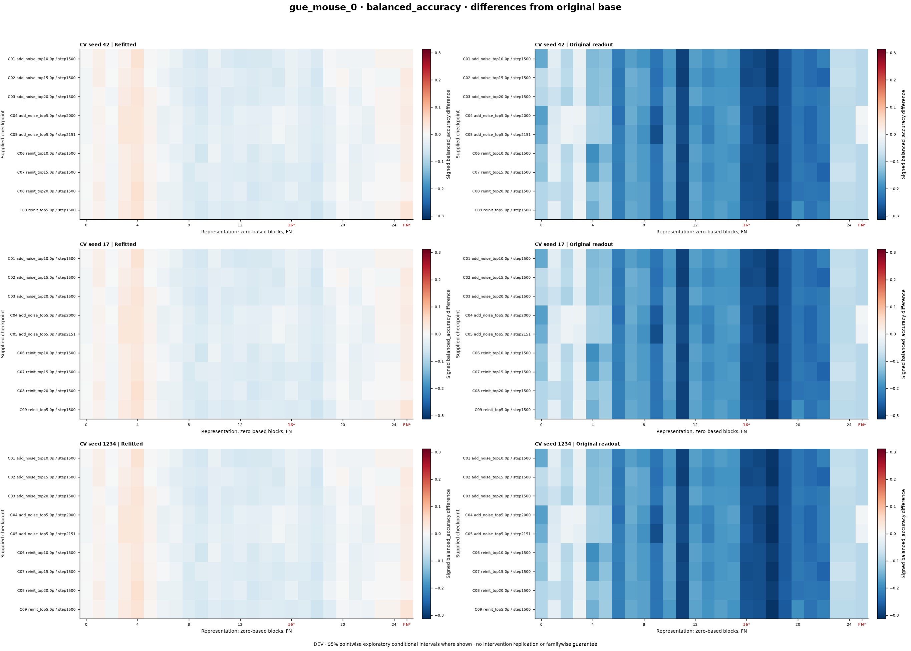
Complete candidate-by-representation signed candidate-minus-original-base differences for every CV seed and policy. A common zero-centered scale is used across panels within this metric/task. Values are descriptive; cell color does not imply familywise significance. Readout compatibility need not follow refitted accessibility. Complete signed effects span -0.312962 to 0.049435; 1215 negative, 186 positive and 3 exactly zero cells. Favorability follows the metric direction, with lower classifier CE better.
Vector PDF · SVG · Source specification
gue_mouse_0 · cross_entropy · differences from original base
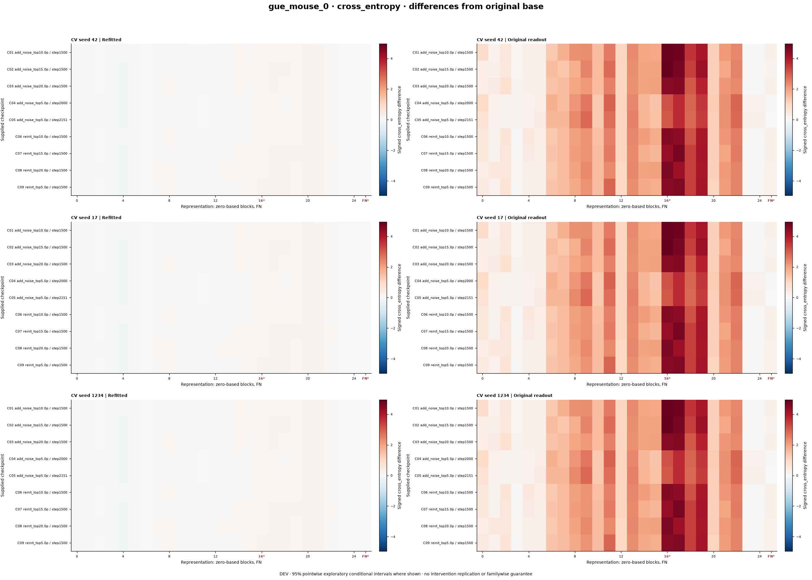
Complete candidate-by-representation signed candidate-minus-original-base differences for every CV seed and policy. A common zero-centered scale is used across panels within this metric/task. Values are descriptive; cell color does not imply familywise significance. Readout compatibility need not follow refitted accessibility. Complete signed effects span -0.128646 to 4.952613; 216 negative, 1188 positive and 0 exactly zero cells. Favorability follows the metric direction, with lower classifier CE better.
Vector PDF · SVG · Source specification
gue_prom_300_all · AP · differences from original base
Complete candidate-by-representation signed candidate-minus-original-base differences for every CV seed and policy. A common zero-centered scale is used across panels within this metric/task. Values are descriptive; cell color does not imply familywise significance. Readout compatibility need not follow refitted accessibility. Complete signed effects span -0.555731 to 0.059837; 894 negative, 510 positive and 0 exactly zero cells. Favorability follows the metric direction, with lower classifier CE better.
Vector PDF · SVG · Source specification
gue_prom_300_all · AUROC · differences from original base
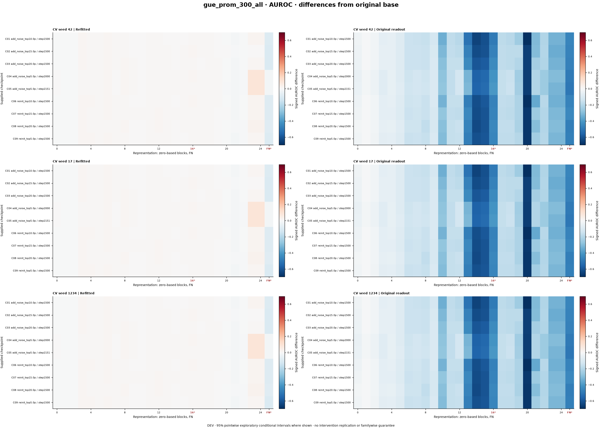
Complete candidate-by-representation signed candidate-minus-original-base differences for every CV seed and policy. A common zero-centered scale is used across panels within this metric/task. Values are descriptive; cell color does not imply familywise significance. Readout compatibility need not follow refitted accessibility. Complete signed effects span -0.696376 to 0.092058; 879 negative, 525 positive and 0 exactly zero cells. Favorability follows the metric direction, with lower classifier CE better.
Vector PDF · SVG · Source specification
gue_prom_300_all · accuracy · differences from original base
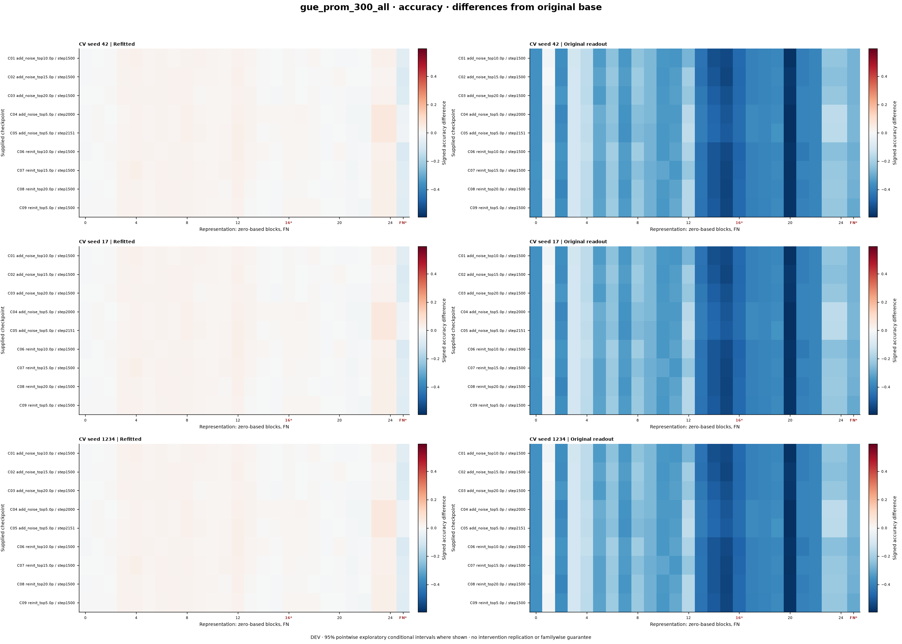
Complete candidate-by-representation signed candidate-minus-original-base differences for every CV seed and policy. A common zero-centered scale is used across panels within this metric/task. Values are descriptive; cell color does not imply familywise significance. Readout compatibility need not follow refitted accessibility. Complete signed effects span -0.595703 to 0.064453; 888 negative, 489 positive and 27 exactly zero cells. Favorability follows the metric direction, with lower classifier CE better.
Vector PDF · SVG · Source specification
gue_prom_300_all · balanced_accuracy · differences from original base
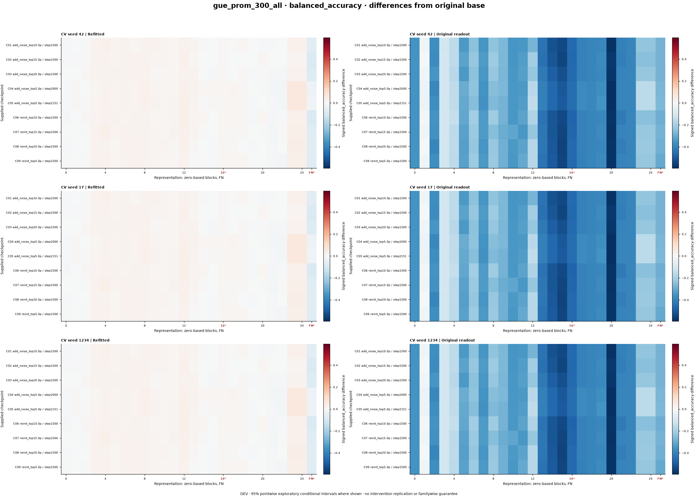
Complete candidate-by-representation signed candidate-minus-original-base differences for every CV seed and policy. A common zero-centered scale is used across panels within this metric/task. Values are descriptive; cell color does not imply familywise significance. Readout compatibility need not follow refitted accessibility. Complete signed effects span -0.594759 to 0.064309; 912 negative, 489 positive and 3 exactly zero cells. Favorability follows the metric direction, with lower classifier CE better.
Vector PDF · SVG · Source specification
gue_prom_300_all · cross_entropy · differences from original base
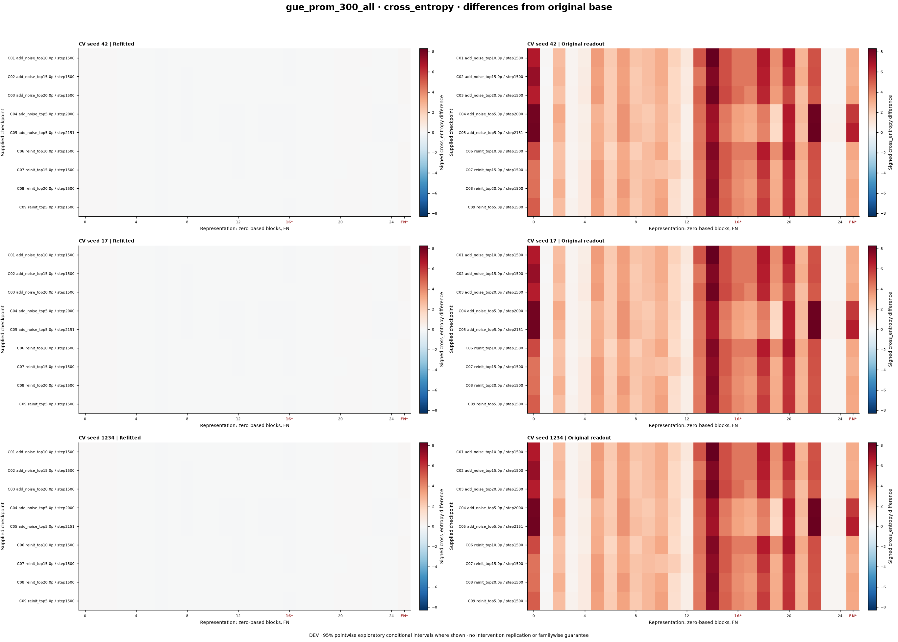
Complete candidate-by-representation signed candidate-minus-original-base differences for every CV seed and policy. A common zero-centered scale is used across panels within this metric/task. Values are descriptive; cell color does not imply familywise significance. Readout compatibility need not follow refitted accessibility. Complete signed effects span -0.081756 to 8.305954; 522 negative, 882 positive and 0 exactly zero cells. Favorability follows the metric direction, with lower classifier CE better.
Vector PDF · SVG · Source specification
gue_prom_core_all · AP · differences from original base
Complete candidate-by-representation signed candidate-minus-original-base differences for every CV seed and policy. A common zero-centered scale is used across panels within this metric/task. Values are descriptive; cell color does not imply familywise significance. Readout compatibility need not follow refitted accessibility. Complete signed effects span -0.333810 to 0.044098; 782 negative, 622 positive and 0 exactly zero cells. Favorability follows the metric direction, with lower classifier CE better.
Vector PDF · SVG · Source specification
gue_prom_core_all · AUROC · differences from original base
Complete candidate-by-representation signed candidate-minus-original-base differences for every CV seed and policy. A common zero-centered scale is used across panels within this metric/task. Values are descriptive; cell color does not imply familywise significance. Readout compatibility need not follow refitted accessibility. Complete signed effects span -0.349966 to 0.043719; 772 negative, 632 positive and 0 exactly zero cells. Favorability follows the metric direction, with lower classifier CE better.
Vector PDF · SVG · Source specification
gue_prom_core_all · accuracy · differences from original base
Complete candidate-by-representation signed candidate-minus-original-base differences for every CV seed and policy. A common zero-centered scale is used across panels within this metric/task. Values are descriptive; cell color does not imply familywise significance. Readout compatibility need not follow refitted accessibility. Complete signed effects span -0.298828 to 0.058594; 841 negative, 546 positive and 17 exactly zero cells. Favorability follows the metric direction, with lower classifier CE better.
Vector PDF · SVG · Source specification
gue_prom_core_all · balanced_accuracy · differences from original base
Complete candidate-by-representation signed candidate-minus-original-base differences for every CV seed and policy. A common zero-centered scale is used across panels within this metric/task. Values are descriptive; cell color does not imply familywise significance. Readout compatibility need not follow refitted accessibility. Complete signed effects span -0.301639 to 0.058780; 853 negative, 551 positive and 0 exactly zero cells. Favorability follows the metric direction, with lower classifier CE better.
Vector PDF · SVG · Source specification
gue_prom_core_all · cross_entropy · differences from original base
Complete candidate-by-representation signed candidate-minus-original-base differences for every CV seed and policy. A common zero-centered scale is used across panels within this metric/task. Values are descriptive; cell color does not imply familywise significance. Readout compatibility need not follow refitted accessibility. Complete signed effects span -0.189148 to 8.510473; 517 negative, 887 positive and 0 exactly zero cells. Favorability follows the metric direction, with lower classifier CE better.
Vector PDF · SVG · Source specification
gue_splice_reconstructed · AP · differences from original base
Complete candidate-by-representation signed candidate-minus-original-base differences for every CV seed and policy. A common zero-centered scale is used across panels within this metric/task. Values are descriptive; cell color does not imply familywise significance. Readout compatibility need not follow refitted accessibility. Complete signed effects span -0.280120 to 0.000958; 1401 negative, 3 positive and 0 exactly zero cells. Favorability follows the metric direction, with lower classifier CE better.
Vector PDF · SVG · Source specification
gue_splice_reconstructed · AUROC · differences from original base
Complete candidate-by-representation signed candidate-minus-original-base differences for every CV seed and policy. A common zero-centered scale is used across panels within this metric/task. Values are descriptive; cell color does not imply familywise significance. Readout compatibility need not follow refitted accessibility. Complete signed effects span -0.293408 to -0.000646; 1404 negative, 0 positive and 0 exactly zero cells. Favorability follows the metric direction, with lower classifier CE better.
Vector PDF · SVG · Source specification
gue_splice_reconstructed · accuracy · differences from original base
Complete candidate-by-representation signed candidate-minus-original-base differences for every CV seed and policy. A common zero-centered scale is used across panels within this metric/task. Values are descriptive; cell color does not imply familywise significance. Readout compatibility need not follow refitted accessibility. Complete signed effects span -0.357422 to 0.015625; 1374 negative, 27 positive and 3 exactly zero cells. Favorability follows the metric direction, with lower classifier CE better.
Vector PDF · SVG · Source specification
gue_splice_reconstructed · balanced_accuracy · differences from original base
Complete candidate-by-representation signed candidate-minus-original-base differences for every CV seed and policy. A common zero-centered scale is used across panels within this metric/task. Values are descriptive; cell color does not imply familywise significance. Readout compatibility need not follow refitted accessibility. Complete signed effects span -0.308119 to 0.016652; 1383 negative, 21 positive and 0 exactly zero cells. Favorability follows the metric direction, with lower classifier CE better.
Vector PDF · SVG · Source specification
gue_splice_reconstructed · cross_entropy · differences from original base
Complete candidate-by-representation signed candidate-minus-original-base differences for every CV seed and policy. A common zero-centered scale is used across panels within this metric/task. Values are descriptive; cell color does not imply familywise significance. Readout compatibility need not follow refitted accessibility. Complete signed effects span -0.025023 to 14.647691; 33 negative, 1371 positive and 0 exactly zero cells. Favorability follows the metric direction, with lower classifier CE better.
Vector PDF · SVG · Source specification
gue_tf_0 · AP · differences from original base
Complete candidate-by-representation signed candidate-minus-original-base differences for every CV seed and policy. A common zero-centered scale is used across panels within this metric/task. Values are descriptive; cell color does not imply familywise significance. Readout compatibility need not follow refitted accessibility. Complete signed effects span -0.255976 to 0.051041; 1033 negative, 371 positive and 0 exactly zero cells. Favorability follows the metric direction, with lower classifier CE better.
Vector PDF · SVG · Source specification
gue_tf_0 · AUROC · differences from original base
Complete candidate-by-representation signed candidate-minus-original-base differences for every CV seed and policy. A common zero-centered scale is used across panels within this metric/task. Values are descriptive; cell color does not imply familywise significance. Readout compatibility need not follow refitted accessibility. Complete signed effects span -0.320113 to 0.014285; 1202 negative, 202 positive and 0 exactly zero cells. Favorability follows the metric direction, with lower classifier CE better.
Vector PDF · SVG · Source specification
gue_tf_0 · accuracy · differences from original base
Complete candidate-by-representation signed candidate-minus-original-base differences for every CV seed and policy. A common zero-centered scale is used across panels within this metric/task. Values are descriptive; cell color does not imply familywise significance. Readout compatibility need not follow refitted accessibility. Complete signed effects span -0.236328 to 0.031250; 1263 negative, 103 positive and 38 exactly zero cells. Favorability follows the metric direction, with lower classifier CE better.
Vector PDF · SVG · Source specification
gue_tf_0 · balanced_accuracy · differences from original base
Complete candidate-by-representation signed candidate-minus-original-base differences for every CV seed and policy. A common zero-centered scale is used across panels within this metric/task. Values are descriptive; cell color does not imply familywise significance. Readout compatibility need not follow refitted accessibility. Complete signed effects span -0.232633 to 0.031289; 1280 negative, 124 positive and 0 exactly zero cells. Favorability follows the metric direction, with lower classifier CE better.
Vector PDF · SVG · Source specification
gue_tf_0 · cross_entropy · differences from original base
Complete candidate-by-representation signed candidate-minus-original-base differences for every CV seed and policy. A common zero-centered scale is used across panels within this metric/task. Values are descriptive; cell color does not imply familywise significance. Readout compatibility need not follow refitted accessibility. Complete signed effects span -0.058489 to 5.219279; 196 negative, 1208 positive and 0 exactly zero cells. Favorability follows the metric direction, with lower classifier CE better.
Vector PDF · SVG · Source specification
emp_H3 · ranking, decisions and classifier probability loss
All five classifier metrics at the two frozen anchors for all checkpoints, both policies and three seeds. CE is in nats; all other values are unitless. Ranking, thresholded decisions and probability loss need not agree. LM remains separately displayed in the supplied-endpoint figures; no synthetic capability score is used. Displayed anchor point ranges: AUROC 0.725857–0.955745; AP 0.723112–0.955265; accuracy 0.518370–0.896460; balanced_accuracy 0.509524–0.896727; cross_entropy 0.293040–4.068236. Ranges are metric-specific and descriptive.
Vector PDF · SVG · Source specification
gue_mouse_0 · ranking, decisions and classifier probability loss
All five classifier metrics at the two frozen anchors for all checkpoints, both policies and three seeds. CE is in nats; all other values are unitless. Ranking, thresholded decisions and probability loss need not agree. LM remains separately displayed in the supplied-endpoint figures; no synthetic capability score is used. Displayed anchor point ranges: AUROC 0.559206–0.835527; AP 0.600190–0.864284; accuracy 0.478516–0.755859; balanced_accuracy 0.489084–0.754672; cross_entropy 0.611338–5.485564. Ranges are metric-specific and descriptive.
Vector PDF · SVG · Source specification
gue_prom_300_all · ranking, decisions and classifier probability loss
All five classifier metrics at the two frozen anchors for all checkpoints, both policies and three seeds. CE is in nats; all other values are unitless. Ranking, thresholded decisions and probability loss need not agree. LM remains separately displayed in the supplied-endpoint figures; no synthetic capability score is used. Displayed anchor point ranges: AUROC 0.335698–0.966217; AP 0.409345–0.968134; accuracy 0.417969–0.906250; balanced_accuracy 0.419501–0.906172; cross_entropy 0.242934–7.041146. Ranges are metric-specific and descriptive.
Vector PDF · SVG · Source specification
gue_prom_core_all · ranking, decisions and classifier probability loss
All five classifier metrics at the two frozen anchors for all checkpoints, both policies and three seeds. CE is in nats; all other values are unitless. Ranking, thresholded decisions and probability loss need not agree. LM remains separately displayed in the supplied-endpoint figures; no synthetic capability score is used. Displayed anchor point ranges: AUROC 0.476744–0.849020; AP 0.518789–0.850226; accuracy 0.457031–0.777344; balanced_accuracy 0.453763–0.777147; cross_entropy 0.564499–5.671178. Ranges are metric-specific and descriptive.
Vector PDF · SVG · Source specification
gue_splice_reconstructed · ranking, decisions and classifier probability loss
All five classifier metrics at the two frozen anchors for all checkpoints, both policies and three seeds. CE is in nats; all other values are unitless. Ranking, thresholded decisions and probability loss need not agree. LM remains separately displayed in the supplied-endpoint figures; no synthetic capability score is used. Displayed anchor point ranges: AUROC 0.527435–0.732211; AP 0.370008–0.528078; accuracy 0.216797–0.572266; balanced_accuracy 0.330455–0.545477; cross_entropy 1.062859–7.453744. Ranges are metric-specific and descriptive.
Vector PDF · SVG · Source specification
gue_tf_0 · ranking, decisions and classifier probability loss
All five classifier metrics at the two frozen anchors for all checkpoints, both policies and three seeds. CE is in nats; all other values are unitless. Ranking, thresholded decisions and probability loss need not agree. LM remains separately displayed in the supplied-endpoint figures; no synthetic capability score is used. Displayed anchor point ranges: AUROC 0.459232–0.800810; AP 0.486437–0.796124; accuracy 0.482422–0.726562; balanced_accuracy 0.500000–0.726362; cross_entropy 0.648257–4.068731. Ranges are metric-specific and descriptive.
Vector PDF · SVG · Source specification
emp_H3 · AP · all checkpoints / policies / CV seeds
All 26 representations and all three CV seeds; seed42 has 95% pointwise exploratory conditional marginal intervals. Colors distinguish CV partitions, not intervention replicates. Block16 is the seventeenth decoder block; FN is final normalization. Ranking accessibility and original-readout compatibility differ across supplied endpoints; no layer is selected for inference. Displayed point values span 0.554063 to 0.961567; 1404 of 1404 displayed points are positive. These are displayed observations, with repeated/shared dependencies retained, not independent replicates.
Vector PDF · SVG · Source specification
emp_H3 · AUROC · all checkpoints / policies / CV seeds
All 26 representations and all three CV seeds; seed42 has 95% pointwise exploratory conditional marginal intervals. Colors distinguish CV partitions, not intervention replicates. Block16 is the seventeenth decoder block; FN is final normalization. Ranking accessibility and original-readout compatibility differ across supplied endpoints; no layer is selected for inference. Displayed point values span 0.508506 to 0.958182; 1404 of 1404 displayed points are positive. These are displayed observations, with repeated/shared dependencies retained, not independent replicates.
Vector PDF · SVG · Source specification
emp_H3 · accuracy · all checkpoints / policies / CV seeds
All 26 representations and all three CV seeds; seed42 has 95% pointwise exploratory conditional marginal intervals. Colors distinguish CV partitions, not intervention replicates. Block16 is the seventeenth decoder block; FN is final normalization. Ranking accessibility and original-readout compatibility differ across supplied endpoints; no layer is selected for inference. Displayed point values span 0.488978 to 0.899800; 1404 of 1404 displayed points are positive. These are displayed observations, with repeated/shared dependencies retained, not independent replicates.
Vector PDF · SVG · Source specification
emp_H3 · balanced_accuracy · all checkpoints / policies / CV seeds
All 26 representations and all three CV seeds; seed42 has 95% pointwise exploratory conditional marginal intervals. Colors distinguish CV partitions, not intervention replicates. Block16 is the seventeenth decoder block; FN is final normalization. Ranking accessibility and original-readout compatibility differ across supplied endpoints; no layer is selected for inference. Displayed point values span 0.482291 to 0.899960; 1404 of 1404 displayed points are positive. These are displayed observations, with repeated/shared dependencies retained, not independent replicates.
Vector PDF · SVG · Source specification
emp_H3 · cross_entropy · all checkpoints / policies / CV seeds
All 26 representations and all three CV seeds; seed42 has 95% pointwise exploratory conditional marginal intervals. Colors distinguish CV partitions, not intervention replicates. Block16 is the seventeenth decoder block; FN is final normalization. Ranking accessibility and original-readout compatibility differ across supplied endpoints; no layer is selected for inference. Displayed point values span 0.277005 to 11.037008; 1404 of 1404 displayed points are positive. These are displayed observations, with repeated/shared dependencies retained, not independent replicates.
Vector PDF · SVG · Source specification
gue_mouse_0 · AP · all checkpoints / policies / CV seeds
All 26 representations and all three CV seeds; seed42 has 95% pointwise exploratory conditional marginal intervals. Colors distinguish CV partitions, not intervention replicates. Block16 is the seventeenth decoder block; FN is final normalization. Ranking accessibility and original-readout compatibility differ across supplied endpoints; no layer is selected for inference. Displayed point values span 0.498312 to 0.937661; 1404 of 1404 displayed points are positive. These are displayed observations, with repeated/shared dependencies retained, not independent replicates.
Vector PDF · SVG · Source specification
gue_mouse_0 · AUROC · all checkpoints / policies / CV seeds
All 26 representations and all three CV seeds; seed42 has 95% pointwise exploratory conditional marginal intervals. Colors distinguish CV partitions, not intervention replicates. Block16 is the seventeenth decoder block; FN is final normalization. Ranking accessibility and original-readout compatibility differ across supplied endpoints; no layer is selected for inference. Displayed point values span 0.492489 to 0.929313; 1404 of 1404 displayed points are positive. These are displayed observations, with repeated/shared dependencies retained, not independent replicates.
Vector PDF · SVG · Source specification
gue_mouse_0 · accuracy · all checkpoints / policies / CV seeds
All 26 representations and all three CV seeds; seed42 has 95% pointwise exploratory conditional marginal intervals. Colors distinguish CV partitions, not intervention replicates. Block16 is the seventeenth decoder block; FN is final normalization. Ranking accessibility and original-readout compatibility differ across supplied endpoints; no layer is selected for inference. Displayed point values span 0.478516 to 0.855469; 1404 of 1404 displayed points are positive. These are displayed observations, with repeated/shared dependencies retained, not independent replicates.
Vector PDF · SVG · Source specification
gue_mouse_0 · balanced_accuracy · all checkpoints / policies / CV seeds
All 26 representations and all three CV seeds; seed42 has 95% pointwise exploratory conditional marginal intervals. Colors distinguish CV partitions, not intervention replicates. Block16 is the seventeenth decoder block; FN is final normalization. Ranking accessibility and original-readout compatibility differ across supplied endpoints; no layer is selected for inference. Displayed point values span 0.486885 to 0.855298; 1404 of 1404 displayed points are positive. These are displayed observations, with repeated/shared dependencies retained, not independent replicates.
Vector PDF · SVG · Source specification
gue_mouse_0 · cross_entropy · all checkpoints / policies / CV seeds
All 26 representations and all three CV seeds; seed42 has 95% pointwise exploratory conditional marginal intervals. Colors distinguish CV partitions, not intervention replicates. Block16 is the seventeenth decoder block; FN is final normalization. Ranking accessibility and original-readout compatibility differ across supplied endpoints; no layer is selected for inference. Displayed point values span 0.394675 to 5.485564; 1404 of 1404 displayed points are positive. These are displayed observations, with repeated/shared dependencies retained, not independent replicates.
Vector PDF · SVG · Source specification
gue_prom_300_all · AP · all checkpoints / policies / CV seeds
All 26 representations and all three CV seeds; seed42 has 95% pointwise exploratory conditional marginal intervals. Colors distinguish CV partitions, not intervention replicates. Block16 is the seventeenth decoder block; FN is final normalization. Ranking accessibility and original-readout compatibility differ across supplied endpoints; no layer is selected for inference. Displayed point values span 0.388822 to 0.970729; 1404 of 1404 displayed points are positive. These are displayed observations, with repeated/shared dependencies retained, not independent replicates.
Vector PDF · SVG · Source specification
gue_prom_300_all · AUROC · all checkpoints / policies / CV seeds
All 26 representations and all three CV seeds; seed42 has 95% pointwise exploratory conditional marginal intervals. Colors distinguish CV partitions, not intervention replicates. Block16 is the seventeenth decoder block; FN is final normalization. Ranking accessibility and original-readout compatibility differ across supplied endpoints; no layer is selected for inference. Displayed point values span 0.256794 to 0.971725; 1404 of 1404 displayed points are positive. These are displayed observations, with repeated/shared dependencies retained, not independent replicates.
Vector PDF · SVG · Source specification
gue_prom_300_all · accuracy · all checkpoints / policies / CV seeds
All 26 representations and all three CV seeds; seed42 has 95% pointwise exploratory conditional marginal intervals. Colors distinguish CV partitions, not intervention replicates. Block16 is the seventeenth decoder block; FN is final normalization. Ranking accessibility and original-readout compatibility differ across supplied endpoints; no layer is selected for inference. Displayed point values span 0.283203 to 0.927734; 1404 of 1404 displayed points are positive. These are displayed observations, with repeated/shared dependencies retained, not independent replicates.
Vector PDF · SVG · Source specification
gue_prom_300_all · balanced_accuracy · all checkpoints / policies / CV seeds
All 26 representations and all three CV seeds; seed42 has 95% pointwise exploratory conditional marginal intervals. Colors distinguish CV partitions, not intervention replicates. Block16 is the seventeenth decoder block; FN is final normalization. Ranking accessibility and original-readout compatibility differ across supplied endpoints; no layer is selected for inference. Displayed point values span 0.284070 to 0.927680; 1404 of 1404 displayed points are positive. These are displayed observations, with repeated/shared dependencies retained, not independent replicates.
Vector PDF · SVG · Source specification
gue_prom_300_all · cross_entropy · all checkpoints / policies / CV seeds
All 26 representations and all three CV seeds; seed42 has 95% pointwise exploratory conditional marginal intervals. Colors distinguish CV partitions, not intervention replicates. Block16 is the seventeenth decoder block; FN is final normalization. Ranking accessibility and original-readout compatibility differ across supplied endpoints; no layer is selected for inference. Displayed point values span 0.221771 to 8.623656; 1404 of 1404 displayed points are positive. These are displayed observations, with repeated/shared dependencies retained, not independent replicates.
Vector PDF · SVG · Source specification
gue_prom_core_all · AP · all checkpoints / policies / CV seeds
All 26 representations and all three CV seeds; seed42 has 95% pointwise exploratory conditional marginal intervals. Colors distinguish CV partitions, not intervention replicates. Block16 is the seventeenth decoder block; FN is final normalization. Ranking accessibility and original-readout compatibility differ across supplied endpoints; no layer is selected for inference. Displayed point values span 0.509015 to 0.892882; 1404 of 1404 displayed points are positive. These are displayed observations, with repeated/shared dependencies retained, not independent replicates.
Vector PDF · SVG · Source specification
gue_prom_core_all · AUROC · all checkpoints / policies / CV seeds
All 26 representations and all three CV seeds; seed42 has 95% pointwise exploratory conditional marginal intervals. Colors distinguish CV partitions, not intervention replicates. Block16 is the seventeenth decoder block; FN is final normalization. Ranking accessibility and original-readout compatibility differ across supplied endpoints; no layer is selected for inference. Displayed point values span 0.473051 to 0.883904; 1404 of 1404 displayed points are positive. These are displayed observations, with repeated/shared dependencies retained, not independent replicates.
Vector PDF · SVG · Source specification
gue_prom_core_all · accuracy · all checkpoints / policies / CV seeds
All 26 representations and all three CV seeds; seed42 has 95% pointwise exploratory conditional marginal intervals. Colors distinguish CV partitions, not intervention replicates. Block16 is the seventeenth decoder block; FN is final normalization. Ranking accessibility and original-readout compatibility differ across supplied endpoints; no layer is selected for inference. Displayed point values span 0.455078 to 0.814453; 1404 of 1404 displayed points are positive. These are displayed observations, with repeated/shared dependencies retained, not independent replicates.
Vector PDF · SVG · Source specification
gue_prom_core_all · balanced_accuracy · all checkpoints / policies / CV seeds
All 26 representations and all three CV seeds; seed42 has 95% pointwise exploratory conditional marginal intervals. Colors distinguish CV partitions, not intervention replicates. Block16 is the seventeenth decoder block; FN is final normalization. Ranking accessibility and original-readout compatibility differ across supplied endpoints; no layer is selected for inference. Displayed point values span 0.452130 to 0.814335; 1404 of 1404 displayed points are positive. These are displayed observations, with repeated/shared dependencies retained, not independent replicates.
Vector PDF · SVG · Source specification
gue_prom_core_all · cross_entropy · all checkpoints / policies / CV seeds
All 26 representations and all three CV seeds; seed42 has 95% pointwise exploratory conditional marginal intervals. Colors distinguish CV partitions, not intervention replicates. Block16 is the seventeenth decoder block; FN is final normalization. Ranking accessibility and original-readout compatibility differ across supplied endpoints; no layer is selected for inference. Displayed point values span 0.490405 to 9.165367; 1404 of 1404 displayed points are positive. These are displayed observations, with repeated/shared dependencies retained, not independent replicates.
Vector PDF · SVG · Source specification
gue_splice_reconstructed · AP · all checkpoints / policies / CV seeds
All 26 representations and all three CV seeds; seed42 has 95% pointwise exploratory conditional marginal intervals. Colors distinguish CV partitions, not intervention replicates. Block16 is the seventeenth decoder block; FN is final normalization. Ranking accessibility and original-readout compatibility differ across supplied endpoints; no layer is selected for inference. Displayed point values span 0.342326 to 0.636466; 1404 of 1404 displayed points are positive. These are displayed observations, with repeated/shared dependencies retained, not independent replicates.
Vector PDF · SVG · Source specification
gue_splice_reconstructed · AUROC · all checkpoints / policies / CV seeds
All 26 representations and all three CV seeds; seed42 has 95% pointwise exploratory conditional marginal intervals. Colors distinguish CV partitions, not intervention replicates. Block16 is the seventeenth decoder block; FN is final normalization. Ranking accessibility and original-readout compatibility differ across supplied endpoints; no layer is selected for inference. Displayed point values span 0.485563 to 0.800150; 1404 of 1404 displayed points are positive. These are displayed observations, with repeated/shared dependencies retained, not independent replicates.
Vector PDF · SVG · Source specification
gue_splice_reconstructed · accuracy · all checkpoints / policies / CV seeds
All 26 representations and all three CV seeds; seed42 has 95% pointwise exploratory conditional marginal intervals. Colors distinguish CV partitions, not intervention replicates. Block16 is the seventeenth decoder block; FN is final normalization. Ranking accessibility and original-readout compatibility differ across supplied endpoints; no layer is selected for inference. Displayed point values span 0.212891 to 0.666016; 1404 of 1404 displayed points are positive. These are displayed observations, with repeated/shared dependencies retained, not independent replicates.
Vector PDF · SVG · Source specification
gue_splice_reconstructed · balanced_accuracy · all checkpoints / policies / CV seeds
All 26 representations and all three CV seeds; seed42 has 95% pointwise exploratory conditional marginal intervals. Colors distinguish CV partitions, not intervention replicates. Block16 is the seventeenth decoder block; FN is final normalization. Ranking accessibility and original-readout compatibility differ across supplied endpoints; no layer is selected for inference. Displayed point values span 0.318703 to 0.630808; 1404 of 1404 displayed points are positive. These are displayed observations, with repeated/shared dependencies retained, not independent replicates.
Vector PDF · SVG · Source specification
gue_splice_reconstructed · cross_entropy · all checkpoints / policies / CV seeds
All 26 representations and all three CV seeds; seed42 has 95% pointwise exploratory conditional marginal intervals. Colors distinguish CV partitions, not intervention replicates. Block16 is the seventeenth decoder block; FN is final normalization. Ranking accessibility and original-readout compatibility differ across supplied endpoints; no layer is selected for inference. Displayed point values span 0.992536 to 16.277396; 1404 of 1404 displayed points are positive. These are displayed observations, with repeated/shared dependencies retained, not independent replicates.
Vector PDF · SVG · Source specification
gue_tf_0 · AP · all checkpoints / policies / CV seeds
All 26 representations and all three CV seeds; seed42 has 95% pointwise exploratory conditional marginal intervals. Colors distinguish CV partitions, not intervention replicates. Block16 is the seventeenth decoder block; FN is final normalization. Ranking accessibility and original-readout compatibility differ across supplied endpoints; no layer is selected for inference. Displayed point values span 0.431572 to 0.828267; 1404 of 1404 displayed points are positive. These are displayed observations, with repeated/shared dependencies retained, not independent replicates.
Vector PDF · SVG · Source specification
gue_tf_0 · AUROC · all checkpoints / policies / CV seeds
All 26 representations and all three CV seeds; seed42 has 95% pointwise exploratory conditional marginal intervals. Colors distinguish CV partitions, not intervention replicates. Block16 is the seventeenth decoder block; FN is final normalization. Ranking accessibility and original-readout compatibility differ across supplied endpoints; no layer is selected for inference. Displayed point values span 0.377771 to 0.831487; 1404 of 1404 displayed points are positive. These are displayed observations, with repeated/shared dependencies retained, not independent replicates.
Vector PDF · SVG · Source specification
gue_tf_0 · accuracy · all checkpoints / policies / CV seeds
All 26 representations and all three CV seeds; seed42 has 95% pointwise exploratory conditional marginal intervals. Colors distinguish CV partitions, not intervention replicates. Block16 is the seventeenth decoder block; FN is final normalization. Ranking accessibility and original-readout compatibility differ across supplied endpoints; no layer is selected for inference. Displayed point values span 0.482422 to 0.753906; 1404 of 1404 displayed points are positive. These are displayed observations, with repeated/shared dependencies retained, not independent replicates.
Vector PDF · SVG · Source specification
gue_tf_0 · balanced_accuracy · all checkpoints / policies / CV seeds
All 26 representations and all three CV seeds; seed42 has 95% pointwise exploratory conditional marginal intervals. Colors distinguish CV partitions, not intervention replicates. Block16 is the seventeenth decoder block; FN is final normalization. Ranking accessibility and original-readout compatibility differ across supplied endpoints; no layer is selected for inference. Displayed point values span 0.493362 to 0.754014; 1404 of 1404 displayed points are positive. These are displayed observations, with repeated/shared dependencies retained, not independent replicates.
Vector PDF · SVG · Source specification
gue_tf_0 · cross_entropy · all checkpoints / policies / CV seeds
All 26 representations and all three CV seeds; seed42 has 95% pointwise exploratory conditional marginal intervals. Colors distinguish CV partitions, not intervention replicates. Block16 is the seventeenth decoder block; FN is final normalization. Ranking accessibility and original-readout compatibility differ across supplied endpoints; no layer is selected for inference. Displayed point values span 0.538318 to 5.984392; 1404 of 1404 displayed points are positive. These are displayed observations, with repeated/shared dependencies retained, not independent replicates.
Vector PDF · SVG · Source specification
emp_H3 · descriptive sensitivity to frozen CV partitions
Descriptive maximum-minus-minimum point estimate across all three frozen CV partitions, for every checkpoint/representation/policy/metric. These ranges are not confidence intervals or independent intervention replication. Zero ranges can reflect identical all-TRAIN models and predictions; S08 diagnostics document those coincidences. Observed range by metric: AUROC max 0.00149267; AP max 0.00514686; accuracy max 0.00534402; balanced_accuracy max 0.00529755; cross_entropy max 0.00622033. Zero ranges are explicitly labeled; no CI is inferred from seeds.
Vector PDF · SVG · Source specification
gue_mouse_0 · descriptive sensitivity to frozen CV partitions
Descriptive maximum-minus-minimum point estimate across all three frozen CV partitions, for every checkpoint/representation/policy/metric. These ranges are not confidence intervals or independent intervention replication. Zero ranges can reflect identical all-TRAIN models and predictions; S08 diagnostics document those coincidences. Observed range by metric: AUROC max 0; AP max 0; accuracy max 0; balanced_accuracy max 0; cross_entropy max 0. Zero ranges are explicitly labeled; no CI is inferred from seeds.
Vector PDF · SVG · Source specification
gue_prom_300_all · descriptive sensitivity to frozen CV partitions
Descriptive maximum-minus-minimum point estimate across all three frozen CV partitions, for every checkpoint/representation/policy/metric. These ranges are not confidence intervals or independent intervention replication. Zero ranges can reflect identical all-TRAIN models and predictions; S08 diagnostics document those coincidences. Observed range by metric: AUROC max 0.0030518; AP max 0.00284552; accuracy max 0.0078125; balanced_accuracy max 0.00781262; cross_entropy max 0.00256908. Zero ranges are explicitly labeled; no CI is inferred from seeds.
Vector PDF · SVG · Source specification
gue_prom_core_all · descriptive sensitivity to frozen CV partitions
Descriptive maximum-minus-minimum point estimate across all three frozen CV partitions, for every checkpoint/representation/policy/metric. These ranges are not confidence intervals or independent intervention replication. Zero ranges can reflect identical all-TRAIN models and predictions; S08 diagnostics document those coincidences. Observed range by metric: AUROC max 0.00627175; AP max 0.00894328; accuracy max 0.0195312; balanced_accuracy max 0.019685; cross_entropy max 0.0382763. Zero ranges are explicitly labeled; no CI is inferred from seeds.
Vector PDF · SVG · Source specification
gue_splice_reconstructed · descriptive sensitivity to frozen CV partitions
Descriptive maximum-minus-minimum point estimate across all three frozen CV partitions, for every checkpoint/representation/policy/metric. These ranges are not confidence intervals or independent intervention replication. Zero ranges can reflect identical all-TRAIN models and predictions; S08 diagnostics document those coincidences. Observed range by metric: AUROC max 0.00808964; AP max 0.0142411; accuracy max 0.0507812; balanced_accuracy max 0.0170681; cross_entropy max 0.0863685. Zero ranges are explicitly labeled; no CI is inferred from seeds.
Vector PDF · SVG · Source specification
gue_tf_0 · descriptive sensitivity to frozen CV partitions
Descriptive maximum-minus-minimum point estimate across all three frozen CV partitions, for every checkpoint/representation/policy/metric. These ranges are not confidence intervals or independent intervention replication. Zero ranges can reflect identical all-TRAIN models and predictions; S08 diagnostics document those coincidences. Observed range by metric: AUROC max 0.0501108; AP max 0.0249951; accuracy max 0.0253906; balanced_accuracy max 0.0263158; cross_entropy max 2.70987. Zero ranges are explicitly labeled; no CI is inferred from seeds.
Vector PDF · SVG · Source specification
Supplied endpoints · DEV primary LM measurements
Each supplied checkpoint is a separate labeled endpoint with observed intervention label and checkpoint step. LM NLL and perplexity are distinct from classifier CE. DEV is primary; TRAIN is diagnostic in its separate figure. No verified common lineage, matched exposure, seed/layer replication or checkpoint-pair inference is implied. The two noise-5% endpoints at steps2000 and2151 remain separate. Each task/metric has its own labeled axis, with NLL and perplexity kept distinct; TRAIN panels are diagnostic only.
Vector PDF · SVG · Source specification
Supplied endpoints · TRAIN LM diagnostics only
Each supplied checkpoint is a separate labeled endpoint with observed intervention label and checkpoint step. LM NLL and perplexity are distinct from classifier CE. DEV is primary; TRAIN is diagnostic in its separate figure. No verified common lineage, matched exposure, seed/layer replication or checkpoint-pair inference is implied. The two noise-5% endpoints at steps2000 and2151 remain separate. Each task/metric has its own labeled axis, with NLL and perplexity kept distinct; TRAIN panels are diagnostic only.
Vector PDF · SVG · Source specification